Exercise 3： Let DBAE be a parallelogram. AC⊥DB. Prove that \(EC^{2}=AC^{2} + DB^{2}\).
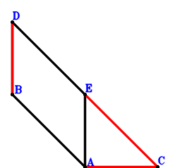
Answer：
\(\because \) DBAE is a parallelogram \(\therefore \small\overrightarrow{CE}=\small\overrightarrow{CA} - \small\overrightarrow{CB} + \small\overrightarrow{CD}\).\(\because \) AC⊥DB \( \therefore\small\overrightarrow{CA} \cdot \small\overrightarrow{DB}=\small\overrightarrow{CA} \cdot \left(\small\overrightarrow{CB} - \small\overrightarrow{CD}\right)=\small\overrightarrow{CA} \cdot \small\overrightarrow{CB} - \small\overrightarrow{CA} \cdot \small\overrightarrow{CD}=0.\)In conclusion, \(\small\overrightarrow{CA}^{2} - \small\overrightarrow{CE}^{2} + \small\overrightarrow{DB}^{2}=\small\overrightarrow{CA}^{2} - \small\overrightarrow{CE}^{2} + \left(\small\overrightarrow{CB} - \small\overrightarrow{CD}\right)^{2}=\small\overrightarrow{CA}^{2} + \left(\small\overrightarrow{CB} - \small\overrightarrow{CD}\right)^{2} - \left(\small\overrightarrow{CA} - \small\overrightarrow{CB} + \small\overrightarrow{CD}\right)^{2}=2 \small\overrightarrow{CA} \cdot \small\overrightarrow{CB} - 2 \small\overrightarrow{CA} \cdot \small\overrightarrow{CD}=0\), that is, \(EC^{2}=AC^{2} + DB^{2}\).
Exercise 9： Let E be the midpoint of FC and AD. AC⊥DB. Prove that \(FB^{2}=AC^{2} + DB^{2}\).
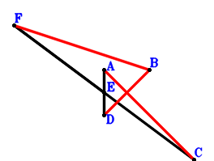
Answer：
\(\because \) E is the midpoint of AD \(\therefore \small\overrightarrow{CE}=\dfrac{\small\overrightarrow{CA}}{2} + \dfrac{\small\overrightarrow{CD}}{2}\).\(\because \) E is the midpoint of FC \(\therefore \small\overrightarrow{CF}=2 \small\overrightarrow{CE}=\small\overrightarrow{CA} + \small\overrightarrow{CD}\).\(\because \) AC⊥DB \( \therefore\small\overrightarrow{CA} \cdot \small\overrightarrow{DB}=\small\overrightarrow{CA} \cdot \left(\small\overrightarrow{CB} - \small\overrightarrow{CD}\right)=\small\overrightarrow{CA} \cdot \small\overrightarrow{CB} - \small\overrightarrow{CA} \cdot \small\overrightarrow{CD}=0.\)In conclusion, \(- \small\overrightarrow{BF}^{2} + \small\overrightarrow{CA}^{2} + \small\overrightarrow{DB}^{2}=\small\overrightarrow{CA}^{2} - \left(- \small\overrightarrow{CB} + \small\overrightarrow{CF}\right)^{2} + \left(\small\overrightarrow{CB} - \small\overrightarrow{CD}\right)^{2}=\small\overrightarrow{CA}^{2} + \left(\small\overrightarrow{CB} - \small\overrightarrow{CD}\right)^{2} - \left(\small\overrightarrow{CA} - \small\overrightarrow{CB} + \small\overrightarrow{CD}\right)^{2}=2 \small\overrightarrow{CA} \cdot \small\overrightarrow{CB} - 2 \small\overrightarrow{CA} \cdot \small\overrightarrow{CD}=0\), that is, \(FB^{2}=AC^{2} + DB^{2}\).
Exercise 26： Let ECDB be a parallelogram. F is the midpoint of HI and CB. G is the midpoint of AD and HB. DB=AE. Prove that CA⊥DI.
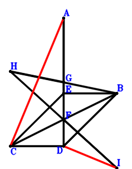
Answer：
\(\because \) ECDB is a parallelogram \(\therefore \small\overrightarrow{DE}=\small\overrightarrow{DB} + \small\overrightarrow{DC}\).\(\because \) F is the midpoint of CB \(\therefore \small\overrightarrow{DF}=\dfrac{\small\overrightarrow{DB}}{2} + \dfrac{\small\overrightarrow{DC}}{2}\).\(\because \) G is the midpoint of AD \(\therefore \small\overrightarrow{DG}=\dfrac{\small\overrightarrow{DA}}{2}\).\(\because \) G is the midpoint of HB \(\therefore \small\overrightarrow{DH}=- \small\overrightarrow{DB} + 2 \small\overrightarrow{DG}=\small\overrightarrow{DA} - \small\overrightarrow{DB}\).\(\because \) F is the midpoint of HI \(\therefore \small\overrightarrow{DI}=\small\overrightarrow{DB} + \small\overrightarrow{DC} - \small\overrightarrow{DH}=- \small\overrightarrow{DA} + 2 \small\overrightarrow{DB} + \small\overrightarrow{DC}\).\(\because \) DB=AE \( \therefore\small\overrightarrow{DB}^{2} - \small\overrightarrow{EA}^{2}=\small\overrightarrow{DB}^{2} - \left(\small\overrightarrow{DA} - \small\overrightarrow{DE}\right)^{2}=\small\overrightarrow{DB}^{2} - \left(\small\overrightarrow{DA} - \small\overrightarrow{DB} - \small\overrightarrow{DC}\right)^{2}=- \small\overrightarrow{DA}^{2} + 2 \small\overrightarrow{DA} \cdot \small\overrightarrow{DB} + 2 \small\overrightarrow{DA} \cdot \small\overrightarrow{DC} - 2 \small\overrightarrow{DB} \cdot \small\overrightarrow{DC} - \small\overrightarrow{DC}^{2}=0.\)In conclusion, \(\small\overrightarrow{CA} \cdot \small\overrightarrow{ID}=- \small\overrightarrow{DI} \cdot \left(\small\overrightarrow{DA} - \small\overrightarrow{DC}\right)=- \left(\small\overrightarrow{DA} - \small\overrightarrow{DC}\right) \cdot \left(- \small\overrightarrow{DA} + 2 \small\overrightarrow{DB} + \small\overrightarrow{DC}\right)=\small\overrightarrow{DA}^{2} - 2 \small\overrightarrow{DA} \cdot \small\overrightarrow{DB} - 2 \small\overrightarrow{DA} \cdot \small\overrightarrow{DC} + 2 \small\overrightarrow{DB} \cdot \small\overrightarrow{DC} + \small\overrightarrow{DC}^{2}=0\), that is, CA⊥DI.
Exercise 55： Let ABFC and EBDC be parallelograms. G is the midpoint of BF. BD=AE. Prove that AC⊥GD.
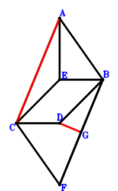
Answer：
\(\because \) EBDC is a parallelogram \(\therefore \small\overrightarrow{BE}=\small\overrightarrow{BC} - \small\overrightarrow{BD}\).\(\because \) ABFC is a parallelogram \(\therefore \small\overrightarrow{BF}=- \small\overrightarrow{BA} + \small\overrightarrow{BC}\).\(\because \) G is the midpoint of BF \(\therefore \small\overrightarrow{BG}=\dfrac{\small\overrightarrow{BF}}{2}=- \dfrac{\small\overrightarrow{BA}}{2} + \dfrac{\small\overrightarrow{BC}}{2}\).\(\because \) BD=AE \( \therefore\small\overrightarrow{DB}^{2} - \small\overrightarrow{EA}^{2}=\small\overrightarrow{BD}^{2} - \left(\small\overrightarrow{BA} - \small\overrightarrow{BE}\right)^{2}=\small\overrightarrow{BD}^{2} - \left(\small\overrightarrow{BA} - \small\overrightarrow{BC} + \small\overrightarrow{BD}\right)^{2}=- \small\overrightarrow{BA}^{2} + 2 \small\overrightarrow{BA} \cdot \small\overrightarrow{BC} - 2 \small\overrightarrow{BA} \cdot \small\overrightarrow{BD} - \small\overrightarrow{BC}^{2} + 2 \small\overrightarrow{BC} \cdot \small\overrightarrow{BD}=0.\)In conclusion, \(\small\overrightarrow{CA} \cdot \small\overrightarrow{GD}=\left(\small\overrightarrow{BA} - \small\overrightarrow{BC}\right) \cdot \left(\small\overrightarrow{BD} - \small\overrightarrow{BG}\right)=\left(\small\overrightarrow{BA} - \small\overrightarrow{BC}\right) \cdot \left(\dfrac{\small\overrightarrow{BA}}{2} - \dfrac{\small\overrightarrow{BC}}{2} + \small\overrightarrow{BD}\right)=\dfrac{\small\overrightarrow{BA}^{2}}{2} - \small\overrightarrow{BA} \cdot \small\overrightarrow{BC} + \small\overrightarrow{BA} \cdot \small\overrightarrow{BD} + \dfrac{\small\overrightarrow{BC}^{2}}{2} - \small\overrightarrow{BC} \cdot \small\overrightarrow{BD}=0\), that is, AC⊥GD.
Exercise 235： Let ABEC, FBDG and ABDF be parallelograms. BD=DE. Prove that AC⊥CG.
Answer：
\(\because \) ABEC is a parallelogram \(\therefore \small\overrightarrow{DE}=- \small\overrightarrow{DA} + \small\overrightarrow{DB} + \small\overrightarrow{DC}\).\(\because \) ABDF is a parallelogram \(\therefore \small\overrightarrow{DF}=\small\overrightarrow{DA} - \small\overrightarrow{DB}\).\(\because \) FBDG is a parallelogram \(\therefore \small\overrightarrow{DG}=\small\overrightarrow{DA} - 2 \small\overrightarrow{DB}\).\(\because \) BD=DE \( \therefore\small\overrightarrow{DB}^{2} - \small\overrightarrow{DE}^{2}=\small\overrightarrow{DB}^{2} - \left(- \small\overrightarrow{DA} + \small\overrightarrow{DB} + \small\overrightarrow{DC}\right)^{2}=- \small\overrightarrow{DA}^{2} + 2 \small\overrightarrow{DA} \cdot \small\overrightarrow{DB} + 2 \small\overrightarrow{DA} \cdot \small\overrightarrow{DC} - 2 \small\overrightarrow{DB} \cdot \small\overrightarrow{DC} - \small\overrightarrow{DC}^{2}=0.\)In conclusion, \(\small\overrightarrow{CA} \cdot \small\overrightarrow{CG}=\left(\small\overrightarrow{DA} - \small\overrightarrow{DC}\right) \cdot \left(- \small\overrightarrow{DC} + \small\overrightarrow{DG}\right)=\left(\small\overrightarrow{DA} - \small\overrightarrow{DC}\right) \cdot \left(\small\overrightarrow{DA} - 2 \small\overrightarrow{DB} - \small\overrightarrow{DC}\right)=\small\overrightarrow{DA}^{2} - 2 \small\overrightarrow{DA} \cdot \small\overrightarrow{DB} - 2 \small\overrightarrow{DA} \cdot \small\overrightarrow{DC} + 2 \small\overrightarrow{DB} \cdot \small\overrightarrow{DC} + \small\overrightarrow{DC}^{2}=0\), that is, AC⊥CG.
Exercise 236： Let HBDG and ABEC be parallelograms. F is the midpoint of BC and GD. BD=DE. Prove that HA⊥AC.
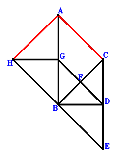
Answer：
\(\because \) ABEC is a parallelogram \(\therefore \small\overrightarrow{DE}=- \small\overrightarrow{DA} + \small\overrightarrow{DB} + \small\overrightarrow{DC}\).\(\because \) F is the midpoint of BC \(\therefore \small\overrightarrow{DF}=\dfrac{\small\overrightarrow{DB}}{2} + \dfrac{\small\overrightarrow{DC}}{2}\).\(\because \) F is the midpoint of GD \(\therefore \small\overrightarrow{DG}=2 \small\overrightarrow{DF}=\small\overrightarrow{DB} + \small\overrightarrow{DC}\).\(\because \) HBDG is a parallelogram \(\therefore \small\overrightarrow{DH}=2 \small\overrightarrow{DB} + \small\overrightarrow{DC}\).\(\because \) BD=DE \( \therefore\small\overrightarrow{DB}^{2} - \small\overrightarrow{DE}^{2}=\small\overrightarrow{DB}^{2} - \left(- \small\overrightarrow{DA} + \small\overrightarrow{DB} + \small\overrightarrow{DC}\right)^{2}=- \small\overrightarrow{DA}^{2} + 2 \small\overrightarrow{DA} \cdot \small\overrightarrow{DB} + 2 \small\overrightarrow{DA} \cdot \small\overrightarrow{DC} - 2 \small\overrightarrow{DB} \cdot \small\overrightarrow{DC} - \small\overrightarrow{DC}^{2}=0.\)In conclusion, \(\small\overrightarrow{CA} \cdot \small\overrightarrow{HA}=\left(\small\overrightarrow{DA} - \small\overrightarrow{DC}\right) \cdot \left(\small\overrightarrow{DA} - \small\overrightarrow{DH}\right)=\left(\small\overrightarrow{DA} - \small\overrightarrow{DC}\right) \cdot \left(\small\overrightarrow{DA} - 2 \small\overrightarrow{DB} - \small\overrightarrow{DC}\right)=\small\overrightarrow{DA}^{2} - 2 \small\overrightarrow{DA} \cdot \small\overrightarrow{DB} - 2 \small\overrightarrow{DA} \cdot \small\overrightarrow{DC} + 2 \small\overrightarrow{DB} \cdot \small\overrightarrow{DC} + \small\overrightarrow{DC}^{2}=0\), that is, HA⊥AC.
Exercise 325： Let EDBA be a parallelogram. ACFB is a trapezoid with CA//FB and CA=2FB. DB=EC. Prove that CA⊥DF.
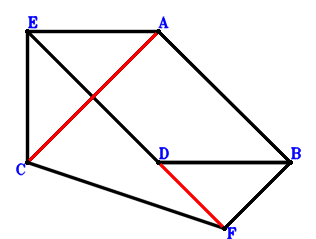
Answer：
\(\because \) EDBA is a parallelogram \(\therefore \small\overrightarrow{DE}=\small\overrightarrow{DA} - \small\overrightarrow{DB}\).\(\because \) CA//FB and CA=2FB \(\therefore \small\overrightarrow{DF}=- \dfrac{\small\overrightarrow{DA}}{2} + \small\overrightarrow{DB} + \dfrac{\small\overrightarrow{DC}}{2}\).\(\because \) DB=EC \( \therefore- \small\overrightarrow{CE}^{2} + \small\overrightarrow{DB}^{2}=\small\overrightarrow{DB}^{2} - \left(- \small\overrightarrow{DC} + \small\overrightarrow{DE}\right)^{2}=\small\overrightarrow{DB}^{2} - \left(\small\overrightarrow{DA} - \small\overrightarrow{DB} - \small\overrightarrow{DC}\right)^{2}=- \small\overrightarrow{DA}^{2} + 2 \small\overrightarrow{DA} \cdot \small\overrightarrow{DB} + 2 \small\overrightarrow{DA} \cdot \small\overrightarrow{DC} - 2 \small\overrightarrow{DB} \cdot \small\overrightarrow{DC} - \small\overrightarrow{DC}^{2}=0.\)In conclusion, \(\small\overrightarrow{CA} \cdot \small\overrightarrow{FD}=- \small\overrightarrow{DF} \cdot \left(\small\overrightarrow{DA} - \small\overrightarrow{DC}\right)=- \left(\small\overrightarrow{DA} - \small\overrightarrow{DC}\right) \cdot \left(- \dfrac{\small\overrightarrow{DA}}{2} + \small\overrightarrow{DB} + \dfrac{\small\overrightarrow{DC}}{2}\right)=\dfrac{\small\overrightarrow{DA}^{2}}{2} - \small\overrightarrow{DA} \cdot \small\overrightarrow{DB} - \small\overrightarrow{DA} \cdot \small\overrightarrow{DC} + \small\overrightarrow{DB} \cdot \small\overrightarrow{DC} + \dfrac{\small\overrightarrow{DC}^{2}}{2}=0\), that is, CA⊥DF.
Exercise 399： Let AEDC be a parallelogram. GBDF is a trapezoid with BD//GF and BD=2GF. H, F are the midpoints of AD, BC, respectively. BD=EB. Prove that AC⊥GH.
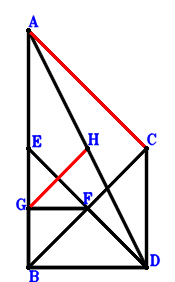
Answer：
\(\because \) AEDC is a parallelogram \(\therefore \small\overrightarrow{DE}=\small\overrightarrow{DA} - \small\overrightarrow{DC}\).\(\because \) F is the midpoint of BC \(\therefore \small\overrightarrow{DF}=\dfrac{\small\overrightarrow{DB}}{2} + \dfrac{\small\overrightarrow{DC}}{2}\).\(\because \) BD//GF and BD=2GF \(\therefore \small\overrightarrow{DG}=\small\overrightarrow{DB} + \dfrac{\small\overrightarrow{DC}}{2}\).\(\because \) H is the midpoint of AD \(\therefore \small\overrightarrow{DH}=\dfrac{\small\overrightarrow{DA}}{2}\).\(\because \) BD=EB \( \therefore- \small\overrightarrow{BE}^{2} + \small\overrightarrow{DB}^{2}=\small\overrightarrow{DB}^{2} - \left(- \small\overrightarrow{DB} + \small\overrightarrow{DE}\right)^{2}=\small\overrightarrow{DB}^{2} - \left(\small\overrightarrow{DA} - \small\overrightarrow{DB} - \small\overrightarrow{DC}\right)^{2}=- \small\overrightarrow{DA}^{2} + 2 \small\overrightarrow{DA} \cdot \small\overrightarrow{DB} + 2 \small\overrightarrow{DA} \cdot \small\overrightarrow{DC} - 2 \small\overrightarrow{DB} \cdot \small\overrightarrow{DC} - \small\overrightarrow{DC}^{2}=0.\)In conclusion, \(\small\overrightarrow{CA} \cdot \small\overrightarrow{GH}=\left(\small\overrightarrow{DA} - \small\overrightarrow{DC}\right) \cdot \left(- \small\overrightarrow{DG} + \small\overrightarrow{DH}\right)=\left(\small\overrightarrow{DA} - \small\overrightarrow{DC}\right) \cdot \left(\dfrac{\small\overrightarrow{DA}}{2} - \small\overrightarrow{DB} - \dfrac{\small\overrightarrow{DC}}{2}\right)=\dfrac{\small\overrightarrow{DA}^{2}}{2} - \small\overrightarrow{DA} \cdot \small\overrightarrow{DB} - \small\overrightarrow{DA} \cdot \small\overrightarrow{DC} + \small\overrightarrow{DB} \cdot \small\overrightarrow{DC} + \dfrac{\small\overrightarrow{DC}^{2}}{2}=0\), that is, AC⊥GH.
Exercise 426： Let ACDE and ACGF be parallelograms. B is the midpoint of DF. DB=EB. Prove that CA⊥DG.
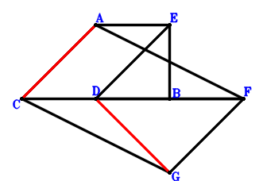
Answer：
\(\because \) ACDE is a parallelogram \(\therefore \small\overrightarrow{DE}=\small\overrightarrow{DA} - \small\overrightarrow{DC}\).\(\because \) B is the midpoint of DF \(\therefore \small\overrightarrow{DF}=2 \small\overrightarrow{DB}\).\(\because \) ACGF is a parallelogram \(\therefore \small\overrightarrow{DG}=- \small\overrightarrow{DA} + 2 \small\overrightarrow{DB} + \small\overrightarrow{DC}\).\(\because \) DB=EB \( \therefore- \small\overrightarrow{BE}^{2} + \small\overrightarrow{DB}^{2}=\small\overrightarrow{DB}^{2} - \left(- \small\overrightarrow{DB} + \small\overrightarrow{DE}\right)^{2}=\small\overrightarrow{DB}^{2} - \left(\small\overrightarrow{DA} - \small\overrightarrow{DB} - \small\overrightarrow{DC}\right)^{2}=- \small\overrightarrow{DA}^{2} + 2 \small\overrightarrow{DA} \cdot \small\overrightarrow{DB} + 2 \small\overrightarrow{DA} \cdot \small\overrightarrow{DC} - 2 \small\overrightarrow{DB} \cdot \small\overrightarrow{DC} - \small\overrightarrow{DC}^{2}=0.\)In conclusion, \(\small\overrightarrow{CA} \cdot \small\overrightarrow{GD}=- \small\overrightarrow{DG} \cdot \left(\small\overrightarrow{DA} - \small\overrightarrow{DC}\right)=- \left(\small\overrightarrow{DA} - \small\overrightarrow{DC}\right) \cdot \left(- \small\overrightarrow{DA} + 2 \small\overrightarrow{DB} + \small\overrightarrow{DC}\right)=\small\overrightarrow{DA}^{2} - 2 \small\overrightarrow{DA} \cdot \small\overrightarrow{DB} - 2 \small\overrightarrow{DA} \cdot \small\overrightarrow{DC} + 2 \small\overrightarrow{DB} \cdot \small\overrightarrow{DC} + \small\overrightarrow{DC}^{2}=0\), that is, CA⊥DG.
Exercise 527： Let CGBA and GHBD be parallelograms. E is the midpoint of BC and FD. BD=FA. Prove that CA⊥HD.
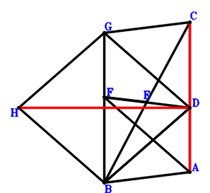
Answer：
\(\because \) E is the midpoint of BC \(\therefore \small\overrightarrow{DE}=\dfrac{\small\overrightarrow{DB}}{2} + \dfrac{\small\overrightarrow{DC}}{2}\).\(\because \) E is the midpoint of FD \(\therefore \small\overrightarrow{DF}=2 \small\overrightarrow{DE}=\small\overrightarrow{DB} + \small\overrightarrow{DC}\).\(\because \) CGBA is a parallelogram \(\therefore \small\overrightarrow{DG}=- \small\overrightarrow{DA} + \small\overrightarrow{DB} + \small\overrightarrow{DC}\).\(\because \) GHBD is a parallelogram \(\therefore \small\overrightarrow{DH}=- \small\overrightarrow{DA} + 2 \small\overrightarrow{DB} + \small\overrightarrow{DC}\).\(\because \) BD=FA \( \therefore\small\overrightarrow{DB}^{2} - \small\overrightarrow{FA}^{2}=\small\overrightarrow{DB}^{2} - \left(\small\overrightarrow{DA} - \small\overrightarrow{DF}\right)^{2}=\small\overrightarrow{DB}^{2} - \left(\small\overrightarrow{DA} - \small\overrightarrow{DB} - \small\overrightarrow{DC}\right)^{2}=- \small\overrightarrow{DA}^{2} + 2 \small\overrightarrow{DA} \cdot \small\overrightarrow{DB} + 2 \small\overrightarrow{DA} \cdot \small\overrightarrow{DC} - 2 \small\overrightarrow{DB} \cdot \small\overrightarrow{DC} - \small\overrightarrow{DC}^{2}=0.\)In conclusion, \(\small\overrightarrow{CA} \cdot \small\overrightarrow{HD}=- \small\overrightarrow{DH} \cdot \left(\small\overrightarrow{DA} - \small\overrightarrow{DC}\right)=- \left(\small\overrightarrow{DA} - \small\overrightarrow{DC}\right) \cdot \left(- \small\overrightarrow{DA} + 2 \small\overrightarrow{DB} + \small\overrightarrow{DC}\right)=\small\overrightarrow{DA}^{2} - 2 \small\overrightarrow{DA} \cdot \small\overrightarrow{DB} - 2 \small\overrightarrow{DA} \cdot \small\overrightarrow{DC} + 2 \small\overrightarrow{DB} \cdot \small\overrightarrow{DC} + \small\overrightarrow{DC}^{2}=0\), that is, CA⊥HD.
Exercise 576： Let D be the midpoint of GB. E is the midpoint of DF and CB. H is the midpoint of IB and GA. DB=AF. Prove that IC⊥CA.
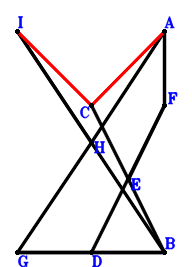
Answer：
\(\because \) E is the midpoint of CB \(\therefore \small\overrightarrow{BE}=\dfrac{\small\overrightarrow{BC}}{2}\).\(\because \) E is the midpoint of DF \(\therefore \small\overrightarrow{BF}=- \small\overrightarrow{BD} + 2 \small\overrightarrow{BE}=\small\overrightarrow{BC} - \small\overrightarrow{BD}\).\(\because \) D is the midpoint of GB \(\therefore \small\overrightarrow{BG}=2 \small\overrightarrow{BD}\).\(\because \) H is the midpoint of GA \(\therefore \small\overrightarrow{BH}=\dfrac{\small\overrightarrow{BA}}{2} + \dfrac{\small\overrightarrow{BG}}{2}=\dfrac{\small\overrightarrow{BA}}{2} + \small\overrightarrow{BD}\).\(\because \) H is the midpoint of IB \(\therefore \small\overrightarrow{BI}=2 \small\overrightarrow{BH}=\small\overrightarrow{BA} + 2 \small\overrightarrow{BD}\).\(\because \) DB=AF \( \therefore\small\overrightarrow{DB}^{2} - \small\overrightarrow{FA}^{2}=\small\overrightarrow{BD}^{2} - \left(\small\overrightarrow{BA} - \small\overrightarrow{BF}\right)^{2}=\small\overrightarrow{BD}^{2} - \left(\small\overrightarrow{BA} - \small\overrightarrow{BC} + \small\overrightarrow{BD}\right)^{2}=- \small\overrightarrow{BA}^{2} + 2 \small\overrightarrow{BA} \cdot \small\overrightarrow{BC} - 2 \small\overrightarrow{BA} \cdot \small\overrightarrow{BD} - \small\overrightarrow{BC}^{2} + 2 \small\overrightarrow{BC} \cdot \small\overrightarrow{BD}=0.\)In conclusion, \(\small\overrightarrow{CA} \cdot \small\overrightarrow{CI}=\left(\small\overrightarrow{BA} - \small\overrightarrow{BC}\right) \cdot \left(- \small\overrightarrow{BC} + \small\overrightarrow{BI}\right)=\left(\small\overrightarrow{BA} - \small\overrightarrow{BC}\right) \cdot \left(\small\overrightarrow{BA} - \small\overrightarrow{BC} + 2 \small\overrightarrow{BD}\right)=\small\overrightarrow{BA}^{2} - 2 \small\overrightarrow{BA} \cdot \small\overrightarrow{BC} + 2 \small\overrightarrow{BA} \cdot \small\overrightarrow{BD} + \small\overrightarrow{BC}^{2} - 2 \small\overrightarrow{BC} \cdot \small\overrightarrow{BD}=0\), that is, IC⊥CA.
Exercise 588： Let IDBH be a parallelogram. E is the midpoint of CB and FD. G is the midpoint of AD and HB. DB=FA. Prove that IC⊥CA.
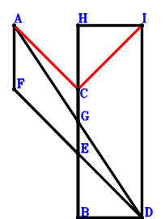
Answer：
\(\because \) E is the midpoint of CB \(\therefore \small\overrightarrow{DE}=\dfrac{\small\overrightarrow{DB}}{2} + \dfrac{\small\overrightarrow{DC}}{2}\).\(\because \) E is the midpoint of FD \(\therefore \small\overrightarrow{DF}=2 \small\overrightarrow{DE}=\small\overrightarrow{DB} + \small\overrightarrow{DC}\).\(\because \) G is the midpoint of AD \(\therefore \small\overrightarrow{DG}=\dfrac{\small\overrightarrow{DA}}{2}\).\(\because \) G is the midpoint of HB \(\therefore \small\overrightarrow{DH}=- \small\overrightarrow{DB} + 2 \small\overrightarrow{DG}=\small\overrightarrow{DA} - \small\overrightarrow{DB}\).\(\because \) IDBH is a parallelogram \(\therefore \small\overrightarrow{DI}=\small\overrightarrow{DA} - 2 \small\overrightarrow{DB}\).\(\because \) DB=FA \( \therefore\small\overrightarrow{DB}^{2} - \small\overrightarrow{FA}^{2}=\small\overrightarrow{DB}^{2} - \left(\small\overrightarrow{DA} - \small\overrightarrow{DF}\right)^{2}=\small\overrightarrow{DB}^{2} - \left(\small\overrightarrow{DA} - \small\overrightarrow{DB} - \small\overrightarrow{DC}\right)^{2}=- \small\overrightarrow{DA}^{2} + 2 \small\overrightarrow{DA} \cdot \small\overrightarrow{DB} + 2 \small\overrightarrow{DA} \cdot \small\overrightarrow{DC} - 2 \small\overrightarrow{DB} \cdot \small\overrightarrow{DC} - \small\overrightarrow{DC}^{2}=0.\)In conclusion, \(\small\overrightarrow{CA} \cdot \small\overrightarrow{CI}=\left(\small\overrightarrow{DA} - \small\overrightarrow{DC}\right) \cdot \left(- \small\overrightarrow{DC} + \small\overrightarrow{DI}\right)=\left(\small\overrightarrow{DA} - \small\overrightarrow{DC}\right) \cdot \left(\small\overrightarrow{DA} - 2 \small\overrightarrow{DB} - \small\overrightarrow{DC}\right)=\small\overrightarrow{DA}^{2} - 2 \small\overrightarrow{DA} \cdot \small\overrightarrow{DB} - 2 \small\overrightarrow{DA} \cdot \small\overrightarrow{DC} + 2 \small\overrightarrow{DB} \cdot \small\overrightarrow{DC} + \small\overrightarrow{DC}^{2}=0\), that is, IC⊥CA.
Exercise 677： Let AGDC be a trapezoid with AC//GD and AC=2GD. E is the midpoint of AF and BC. BD=FD. Prove that AC⊥BG.
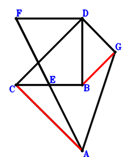
Answer：
\(\because \) E is the midpoint of BC \(\therefore \small\overrightarrow{DE}=\dfrac{\small\overrightarrow{DB}}{2} + \dfrac{\small\overrightarrow{DC}}{2}\).\(\because \) E is the midpoint of AF \(\therefore \small\overrightarrow{DF}=- \small\overrightarrow{DA} + 2 \small\overrightarrow{DE}=- \small\overrightarrow{DA} + \small\overrightarrow{DB} + \small\overrightarrow{DC}\).\(\because \) AC//GD and AC=2GD \(\therefore \small\overrightarrow{DG}=\dfrac{\small\overrightarrow{DA}}{2} - \dfrac{\small\overrightarrow{DC}}{2}\).\(\because \) BD=FD \( \therefore\small\overrightarrow{DB}^{2} - \small\overrightarrow{DF}^{2}=\small\overrightarrow{DB}^{2} - \left(- \small\overrightarrow{DA} + \small\overrightarrow{DB} + \small\overrightarrow{DC}\right)^{2}=- \small\overrightarrow{DA}^{2} + 2 \small\overrightarrow{DA} \cdot \small\overrightarrow{DB} + 2 \small\overrightarrow{DA} \cdot \small\overrightarrow{DC} - 2 \small\overrightarrow{DB} \cdot \small\overrightarrow{DC} - \small\overrightarrow{DC}^{2}=0.\)In conclusion, \(\small\overrightarrow{BG} \cdot \small\overrightarrow{CA}=\left(\small\overrightarrow{DA} - \small\overrightarrow{DC}\right) \cdot \left(- \small\overrightarrow{DB} + \small\overrightarrow{DG}\right)=\left(\small\overrightarrow{DA} - \small\overrightarrow{DC}\right) \cdot \left(\dfrac{\small\overrightarrow{DA}}{2} - \small\overrightarrow{DB} - \dfrac{\small\overrightarrow{DC}}{2}\right)=\dfrac{\small\overrightarrow{DA}^{2}}{2} - \small\overrightarrow{DA} \cdot \small\overrightarrow{DB} - \small\overrightarrow{DA} \cdot \small\overrightarrow{DC} + \small\overrightarrow{DB} \cdot \small\overrightarrow{DC} + \dfrac{\small\overrightarrow{DC}^{2}}{2}=0\), that is, AC⊥BG.
Exercise 735： Let H, G be the midpoints of DF, BC, respectively. E is the midpoint of AD and BF. BD=FC. Prove that AC⊥GH.
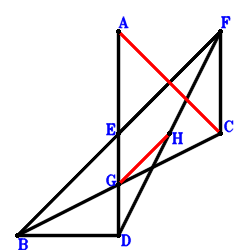
Answer：
\(\because \) E is the midpoint of AD \(\therefore \small\overrightarrow{DE}=\dfrac{\small\overrightarrow{DA}}{2}\).\(\because \) E is the midpoint of BF \(\therefore \small\overrightarrow{DF}=- \small\overrightarrow{DB} + 2 \small\overrightarrow{DE}=\small\overrightarrow{DA} - \small\overrightarrow{DB}\).\(\because \) G is the midpoint of BC \(\therefore \small\overrightarrow{DG}=\dfrac{\small\overrightarrow{DB}}{2} + \dfrac{\small\overrightarrow{DC}}{2}\).\(\because \) H is the midpoint of DF \(\therefore \small\overrightarrow{DH}=\dfrac{\small\overrightarrow{DF}}{2}=\dfrac{\small\overrightarrow{DA}}{2} - \dfrac{\small\overrightarrow{DB}}{2}\).\(\because \) BD=FC \( \therefore- \small\overrightarrow{CF}^{2} + \small\overrightarrow{DB}^{2}=\small\overrightarrow{DB}^{2} - \left(- \small\overrightarrow{DC} + \small\overrightarrow{DF}\right)^{2}=\small\overrightarrow{DB}^{2} - \left(\small\overrightarrow{DA} - \small\overrightarrow{DB} - \small\overrightarrow{DC}\right)^{2}=- \small\overrightarrow{DA}^{2} + 2 \small\overrightarrow{DA} \cdot \small\overrightarrow{DB} + 2 \small\overrightarrow{DA} \cdot \small\overrightarrow{DC} - 2 \small\overrightarrow{DB} \cdot \small\overrightarrow{DC} - \small\overrightarrow{DC}^{2}=0.\)In conclusion, \(\small\overrightarrow{CA} \cdot \small\overrightarrow{GH}=\left(\small\overrightarrow{DA} - \small\overrightarrow{DC}\right) \cdot \left(- \small\overrightarrow{DG} + \small\overrightarrow{DH}\right)=\left(\small\overrightarrow{DA} - \small\overrightarrow{DC}\right) \cdot \left(\dfrac{\small\overrightarrow{DA}}{2} - \small\overrightarrow{DB} - \dfrac{\small\overrightarrow{DC}}{2}\right)=\dfrac{\small\overrightarrow{DA}^{2}}{2} - \small\overrightarrow{DA} \cdot \small\overrightarrow{DB} - \small\overrightarrow{DA} \cdot \small\overrightarrow{DC} + \small\overrightarrow{DB} \cdot \small\overrightarrow{DC} + \dfrac{\small\overrightarrow{DC}^{2}}{2}=0\), that is, AC⊥GH.
Exercise 754： Let H, G be the midpoints of FD, CB, respectively. E is the midpoint of FB and AD. DB=FC. Prove that CA⊥HG.
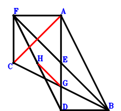
Answer：
\(\because \) E is the midpoint of AD \(\therefore \small\overrightarrow{DE}=\dfrac{\small\overrightarrow{DA}}{2}\).\(\because \) E is the midpoint of FB \(\therefore \small\overrightarrow{DF}=- \small\overrightarrow{DB} + 2 \small\overrightarrow{DE}=\small\overrightarrow{DA} - \small\overrightarrow{DB}\).\(\because \) G is the midpoint of CB \(\therefore \small\overrightarrow{DG}=\dfrac{\small\overrightarrow{DB}}{2} + \dfrac{\small\overrightarrow{DC}}{2}\).\(\because \) FDBA is a parallelogram \(\therefore \small\overrightarrow{DH}=\dfrac{\small\overrightarrow{DF}}{2}=\dfrac{\small\overrightarrow{DA}}{2} - \dfrac{\small\overrightarrow{DB}}{2}\).\(\because \) H is the midpoint of FD \( \therefore- \small\overrightarrow{CF}^{2} + \small\overrightarrow{DB}^{2}=\small\overrightarrow{DB}^{2} - \left(- \small\overrightarrow{DC} + \small\overrightarrow{DF}\right)^{2}=\small\overrightarrow{DB}^{2} - \left(\small\overrightarrow{DA} - \small\overrightarrow{DB} - \small\overrightarrow{DC}\right)^{2}=- \small\overrightarrow{DA}^{2} + 2 \small\overrightarrow{DA} \cdot \small\overrightarrow{DB} + 2 \small\overrightarrow{DA} \cdot \small\overrightarrow{DC} - 2 \small\overrightarrow{DB} \cdot \small\overrightarrow{DC} - \small\overrightarrow{DC}^{2}=0.\)In conclusion, \(\small\overrightarrow{CA} \cdot \small\overrightarrow{GH}=\left(\small\overrightarrow{DA} - \small\overrightarrow{DC}\right) \cdot \left(- \small\overrightarrow{DG} + \small\overrightarrow{DH}\right)=\left(\small\overrightarrow{DA} - \small\overrightarrow{DC}\right) \cdot \left(\dfrac{\small\overrightarrow{DA}}{2} - \small\overrightarrow{DB} - \dfrac{\small\overrightarrow{DC}}{2}\right)=\dfrac{\small\overrightarrow{DA}^{2}}{2} - \small\overrightarrow{DA} \cdot \small\overrightarrow{DB} - \small\overrightarrow{DA} \cdot \small\overrightarrow{DC} + \small\overrightarrow{DB} \cdot \small\overrightarrow{DC} + \dfrac{\small\overrightarrow{DC}^{2}}{2}=0\), that is, CA⊥HG.
Exercise 797： Let GCDB be a trapezoid with CD//GB and CD=2GB. G is the midpoint of DH. E is the midpoint of AD and FB. DB=FC. Prove that CA⊥AH.
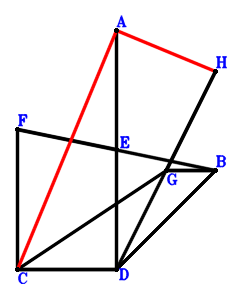
Answer：
\(\because \) E is the midpoint of AD \(\therefore \small\overrightarrow{DE}=\dfrac{\small\overrightarrow{DA}}{2}\).\(\because \) E is the midpoint of FB \(\therefore \small\overrightarrow{DF}=- \small\overrightarrow{DB} + 2 \small\overrightarrow{DE}=\small\overrightarrow{DA} - \small\overrightarrow{DB}\).\(\because \) CD//GB and CD=2GB \(\therefore \small\overrightarrow{DG}=\small\overrightarrow{DB} + \dfrac{\small\overrightarrow{DC}}{2}\).\(\because \) G is the midpoint of DH \(\therefore \small\overrightarrow{DH}=2 \small\overrightarrow{DG}=2 \small\overrightarrow{DB} + \small\overrightarrow{DC}\).\(\because \) DB=FC \( \therefore- \small\overrightarrow{CF}^{2} + \small\overrightarrow{DB}^{2}=\small\overrightarrow{DB}^{2} - \left(- \small\overrightarrow{DC} + \small\overrightarrow{DF}\right)^{2}=\small\overrightarrow{DB}^{2} - \left(\small\overrightarrow{DA} - \small\overrightarrow{DB} - \small\overrightarrow{DC}\right)^{2}=- \small\overrightarrow{DA}^{2} + 2 \small\overrightarrow{DA} \cdot \small\overrightarrow{DB} + 2 \small\overrightarrow{DA} \cdot \small\overrightarrow{DC} - 2 \small\overrightarrow{DB} \cdot \small\overrightarrow{DC} - \small\overrightarrow{DC}^{2}=0.\)In conclusion, \(\small\overrightarrow{CA} \cdot \small\overrightarrow{HA}=\left(\small\overrightarrow{DA} - \small\overrightarrow{DC}\right) \cdot \left(\small\overrightarrow{DA} - \small\overrightarrow{DH}\right)=\left(\small\overrightarrow{DA} - \small\overrightarrow{DC}\right) \cdot \left(\small\overrightarrow{DA} - 2 \small\overrightarrow{DB} - \small\overrightarrow{DC}\right)=\small\overrightarrow{DA}^{2} - 2 \small\overrightarrow{DA} \cdot \small\overrightarrow{DB} - 2 \small\overrightarrow{DA} \cdot \small\overrightarrow{DC} + 2 \small\overrightarrow{DB} \cdot \small\overrightarrow{DC} + \small\overrightarrow{DC}^{2}=0\), that is, CA⊥AH.
Exercise 820： Let GDBF be a parallelogram. E is the midpoint of FB and AD. DB=FC. Prove that GC⊥CA.
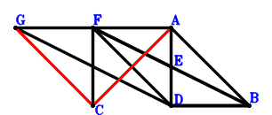
Answer：
\(\because \) E is the midpoint of AD \(\therefore \small\overrightarrow{DE}=\dfrac{\small\overrightarrow{DA}}{2}\).\(\because \) E is the midpoint of FB \(\therefore \small\overrightarrow{DF}=- \small\overrightarrow{DB} + 2 \small\overrightarrow{DE}=\small\overrightarrow{DA} - \small\overrightarrow{DB}\).\(\because \) FDBA is a parallelogram \(\therefore \small\overrightarrow{DG}=\small\overrightarrow{DA} - 2 \small\overrightarrow{DB}\).\(\because \) GDBF is a parallelogram \( \therefore- \small\overrightarrow{CF}^{2} + \small\overrightarrow{DB}^{2}=\small\overrightarrow{DB}^{2} - \left(- \small\overrightarrow{DC} + \small\overrightarrow{DF}\right)^{2}=\small\overrightarrow{DB}^{2} - \left(\small\overrightarrow{DA} - \small\overrightarrow{DB} - \small\overrightarrow{DC}\right)^{2}=- \small\overrightarrow{DA}^{2} + 2 \small\overrightarrow{DA} \cdot \small\overrightarrow{DB} + 2 \small\overrightarrow{DA} \cdot \small\overrightarrow{DC} - 2 \small\overrightarrow{DB} \cdot \small\overrightarrow{DC} - \small\overrightarrow{DC}^{2}=0.\)In conclusion, \(\small\overrightarrow{CA} \cdot \small\overrightarrow{CG}=\left(\small\overrightarrow{DA} - \small\overrightarrow{DC}\right) \cdot \left(- \small\overrightarrow{DC} + \small\overrightarrow{DG}\right)=\left(\small\overrightarrow{DA} - \small\overrightarrow{DC}\right) \cdot \left(\small\overrightarrow{DA} - 2 \small\overrightarrow{DB} - \small\overrightarrow{DC}\right)=\small\overrightarrow{DA}^{2} - 2 \small\overrightarrow{DA} \cdot \small\overrightarrow{DB} - 2 \small\overrightarrow{DA} \cdot \small\overrightarrow{DC} + 2 \small\overrightarrow{DB} \cdot \small\overrightarrow{DC} + \small\overrightarrow{DC}^{2}=0\), that is, GC⊥CA.
Exercise 946： Let GCDB be a trapezoid with CD//GB and CD=2GB. G is the midpoint of AH. E is the midpoint of CF and AD. DB=FB. Prove that CA⊥DH.
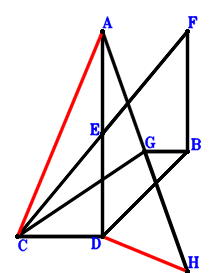
Answer：
\(\because \) E is the midpoint of AD \(\therefore \small\overrightarrow{DE}=\dfrac{\small\overrightarrow{DA}}{2}\).\(\because \) E is the midpoint of CF \(\therefore \small\overrightarrow{DF}=- \small\overrightarrow{DC} + 2 \small\overrightarrow{DE}=\small\overrightarrow{DA} - \small\overrightarrow{DC}\).\(\because \) CD//GB and CD=2GB \(\therefore \small\overrightarrow{DG}=\small\overrightarrow{DB} + \dfrac{\small\overrightarrow{DC}}{2}\).\(\because \) G is the midpoint of AH \(\therefore \small\overrightarrow{DH}=- \small\overrightarrow{DA} + 2 \small\overrightarrow{DG}=- \small\overrightarrow{DA} + 2 \small\overrightarrow{DB} + \small\overrightarrow{DC}\).\(\because \) DB=FB \( \therefore- \small\overrightarrow{BF}^{2} + \small\overrightarrow{DB}^{2}=\small\overrightarrow{DB}^{2} - \left(- \small\overrightarrow{DB} + \small\overrightarrow{DF}\right)^{2}=\small\overrightarrow{DB}^{2} - \left(\small\overrightarrow{DA} - \small\overrightarrow{DB} - \small\overrightarrow{DC}\right)^{2}=- \small\overrightarrow{DA}^{2} + 2 \small\overrightarrow{DA} \cdot \small\overrightarrow{DB} + 2 \small\overrightarrow{DA} \cdot \small\overrightarrow{DC} - 2 \small\overrightarrow{DB} \cdot \small\overrightarrow{DC} - \small\overrightarrow{DC}^{2}=0.\)In conclusion, \(\small\overrightarrow{CA} \cdot \small\overrightarrow{HD}=- \small\overrightarrow{DH} \cdot \left(\small\overrightarrow{DA} - \small\overrightarrow{DC}\right)=- \left(\small\overrightarrow{DA} - \small\overrightarrow{DC}\right) \cdot \left(- \small\overrightarrow{DA} + 2 \small\overrightarrow{DB} + \small\overrightarrow{DC}\right)=\small\overrightarrow{DA}^{2} - 2 \small\overrightarrow{DA} \cdot \small\overrightarrow{DB} - 2 \small\overrightarrow{DA} \cdot \small\overrightarrow{DC} + 2 \small\overrightarrow{DB} \cdot \small\overrightarrow{DC} + \small\overrightarrow{DC}^{2}=0\), that is, CA⊥DH.
Exercise 993： Let G be the midpoint of FD. E is the midpoint of FC and AD. BD=FB. Prove that AC⊥BG.
Answer：
\(\because \) E is the midpoint of AD \(\therefore \small\overrightarrow{DE}=\dfrac{\small\overrightarrow{DA}}{2}\).\(\because \) E is the midpoint of FC \(\therefore \small\overrightarrow{DF}=- \small\overrightarrow{DC} + 2 \small\overrightarrow{DE}=\small\overrightarrow{DA} - \small\overrightarrow{DC}\).\(\because \) AFDC is a parallelogram \(\therefore \small\overrightarrow{DG}=\dfrac{\small\overrightarrow{DF}}{2}=\dfrac{\small\overrightarrow{DA}}{2} - \dfrac{\small\overrightarrow{DC}}{2}\).\(\because \) G is the midpoint of FD \( \therefore- \small\overrightarrow{BF}^{2} + \small\overrightarrow{DB}^{2}=\small\overrightarrow{DB}^{2} - \left(- \small\overrightarrow{DB} + \small\overrightarrow{DF}\right)^{2}=\small\overrightarrow{DB}^{2} - \left(\small\overrightarrow{DA} - \small\overrightarrow{DB} - \small\overrightarrow{DC}\right)^{2}=- \small\overrightarrow{DA}^{2} + 2 \small\overrightarrow{DA} \cdot \small\overrightarrow{DB} + 2 \small\overrightarrow{DA} \cdot \small\overrightarrow{DC} - 2 \small\overrightarrow{DB} \cdot \small\overrightarrow{DC} - \small\overrightarrow{DC}^{2}=0.\)In conclusion, \(\small\overrightarrow{BG} \cdot \small\overrightarrow{CA}=\left(\small\overrightarrow{DA} - \small\overrightarrow{DC}\right) \cdot \left(- \small\overrightarrow{DB} + \small\overrightarrow{DG}\right)=\left(\small\overrightarrow{DA} - \small\overrightarrow{DC}\right) \cdot \left(\dfrac{\small\overrightarrow{DA}}{2} - \small\overrightarrow{DB} - \dfrac{\small\overrightarrow{DC}}{2}\right)=\dfrac{\small\overrightarrow{DA}^{2}}{2} - \small\overrightarrow{DA} \cdot \small\overrightarrow{DB} - \small\overrightarrow{DA} \cdot \small\overrightarrow{DC} + \small\overrightarrow{DB} \cdot \small\overrightarrow{DC} + \dfrac{\small\overrightarrow{DC}^{2}}{2}=0\), that is, AC⊥BG.
Exercise 1120： Let AGDH and EBDC be parallelograms. F is the midpoint of GA and BC. AC=EA. Prove that BD⊥CH.
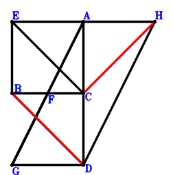
Answer：
\(\because \) EBDC is a parallelogram \(\therefore \small\overrightarrow{CE}=\small\overrightarrow{CB} - \small\overrightarrow{CD}\).\(\because \) F is the midpoint of BC \(\therefore \small\overrightarrow{CF}=\dfrac{\small\overrightarrow{CB}}{2}\).\(\because \) F is the midpoint of GA \(\therefore \small\overrightarrow{CG}=- \small\overrightarrow{CA} + 2 \small\overrightarrow{CF}=- \small\overrightarrow{CA} + \small\overrightarrow{CB}\).\(\because \) AGDH is a parallelogram \(\therefore \small\overrightarrow{CH}=\small\overrightarrow{CA} + \small\overrightarrow{CD} - \small\overrightarrow{CG}=2 \small\overrightarrow{CA} - \small\overrightarrow{CB} + \small\overrightarrow{CD}\).\(\because \) AC=EA \( \therefore\small\overrightarrow{CA}^{2} - \small\overrightarrow{EA}^{2}=\small\overrightarrow{CA}^{2} - \left(\small\overrightarrow{CA} - \small\overrightarrow{CE}\right)^{2}=\small\overrightarrow{CA}^{2} - \left(\small\overrightarrow{CA} - \small\overrightarrow{CB} + \small\overrightarrow{CD}\right)^{2}=2 \small\overrightarrow{CA} \cdot \small\overrightarrow{CB} - 2 \small\overrightarrow{CA} \cdot \small\overrightarrow{CD} - \small\overrightarrow{CB}^{2} + 2 \small\overrightarrow{CB} \cdot \small\overrightarrow{CD} - \small\overrightarrow{CD}^{2}=0.\)In conclusion, \(\small\overrightarrow{DB} \cdot \small\overrightarrow{HC}=- \small\overrightarrow{CH} \cdot \left(\small\overrightarrow{CB} - \small\overrightarrow{CD}\right)=- \left(\small\overrightarrow{CB} - \small\overrightarrow{CD}\right) \cdot \left(2 \small\overrightarrow{CA} - \small\overrightarrow{CB} + \small\overrightarrow{CD}\right)=- 2 \small\overrightarrow{CA} \cdot \small\overrightarrow{CB} + 2 \small\overrightarrow{CA} \cdot \small\overrightarrow{CD} + \small\overrightarrow{CB}^{2} - 2 \small\overrightarrow{CB} \cdot \small\overrightarrow{CD} + \small\overrightarrow{CD}^{2}=0\), that is, BD⊥CH.
Exercise 1139： Let DBEC be a parallelogram. A, F, D are collinear and FD=2AF. G, F, B are collinear and GB=3GF. AC=AE. Prove that BD⊥GC.
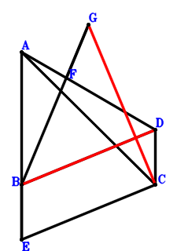
Answer：
\(\because \) DBEC is a parallelogram \(\therefore \small\overrightarrow{CE}=\small\overrightarrow{CB} - \small\overrightarrow{CD}\).\(\because \) A, F, D are collinear and FD=2AF \(\therefore \small\overrightarrow{CF}=\dfrac{2 \small\overrightarrow{CA}}{3} + \dfrac{\small\overrightarrow{CD}}{3}\).\(\because \) G, F, B are collinear and GB=3GF \(\therefore \small\overrightarrow{CG}=- \dfrac{\small\overrightarrow{CB}}{2} + \dfrac{3 \small\overrightarrow{CF}}{2}=\small\overrightarrow{CA} - \dfrac{\small\overrightarrow{CB}}{2} + \dfrac{\small\overrightarrow{CD}}{2}\).\(\because \) AC=AE \( \therefore\small\overrightarrow{CA}^{2} - \small\overrightarrow{EA}^{2}=\small\overrightarrow{CA}^{2} - \left(\small\overrightarrow{CA} - \small\overrightarrow{CE}\right)^{2}=\small\overrightarrow{CA}^{2} - \left(\small\overrightarrow{CA} - \small\overrightarrow{CB} + \small\overrightarrow{CD}\right)^{2}=2 \small\overrightarrow{CA} \cdot \small\overrightarrow{CB} - 2 \small\overrightarrow{CA} \cdot \small\overrightarrow{CD} - \small\overrightarrow{CB}^{2} + 2 \small\overrightarrow{CB} \cdot \small\overrightarrow{CD} - \small\overrightarrow{CD}^{2}=0.\)In conclusion, \(\small\overrightarrow{DB} \cdot \small\overrightarrow{GC}=- \small\overrightarrow{CG} \cdot \left(\small\overrightarrow{CB} - \small\overrightarrow{CD}\right)=- \left(\small\overrightarrow{CB} - \small\overrightarrow{CD}\right) \cdot \left(\small\overrightarrow{CA} - \dfrac{\small\overrightarrow{CB}}{2} + \dfrac{\small\overrightarrow{CD}}{2}\right)=- \small\overrightarrow{CA} \cdot \small\overrightarrow{CB} + \small\overrightarrow{CA} \cdot \small\overrightarrow{CD} + \dfrac{\small\overrightarrow{CB}^{2}}{2} - \small\overrightarrow{CB} \cdot \small\overrightarrow{CD} + \dfrac{\small\overrightarrow{CD}^{2}}{2}=0\), that is, BD⊥GC.
Exercise 1147： Let DCEB be a parallelogram. FCAB is a trapezoid with FB//CA and FB=2CA. CA=AE. Prove that FD⊥DB.
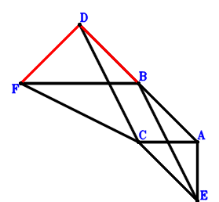
Answer：
\(\because \) DCEB is a parallelogram \(\therefore \small\overrightarrow{CE}=\small\overrightarrow{CB} - \small\overrightarrow{CD}\).\(\because \) FB//CA and FB=2CA \(\therefore \small\overrightarrow{CF}=- 2 \small\overrightarrow{CA} + \small\overrightarrow{CB}\).\(\because \) CA=AE \( \therefore\small\overrightarrow{CA}^{2} - \small\overrightarrow{EA}^{2}=\small\overrightarrow{CA}^{2} - \left(\small\overrightarrow{CA} - \small\overrightarrow{CE}\right)^{2}=\small\overrightarrow{CA}^{2} - \left(\small\overrightarrow{CA} - \small\overrightarrow{CB} + \small\overrightarrow{CD}\right)^{2}=2 \small\overrightarrow{CA} \cdot \small\overrightarrow{CB} - 2 \small\overrightarrow{CA} \cdot \small\overrightarrow{CD} - \small\overrightarrow{CB}^{2} + 2 \small\overrightarrow{CB} \cdot \small\overrightarrow{CD} - \small\overrightarrow{CD}^{2}=0.\)In conclusion, \(\small\overrightarrow{DB} \cdot \small\overrightarrow{DF}=\left(\small\overrightarrow{CB} - \small\overrightarrow{CD}\right) \cdot \left(- \small\overrightarrow{CD} + \small\overrightarrow{CF}\right)=\left(\small\overrightarrow{CB} - \small\overrightarrow{CD}\right) \cdot \left(- 2 \small\overrightarrow{CA} + \small\overrightarrow{CB} - \small\overrightarrow{CD}\right)=- 2 \small\overrightarrow{CA} \cdot \small\overrightarrow{CB} + 2 \small\overrightarrow{CA} \cdot \small\overrightarrow{CD} + \small\overrightarrow{CB}^{2} - 2 \small\overrightarrow{CB} \cdot \small\overrightarrow{CD} + \small\overrightarrow{CD}^{2}=0\), that is, FD⊥DB.
Exercise 1180： Let ABEC be a parallelogram. AFDC is a trapezoid with CD//AF and CD=2AF. F is the midpoint of GB. AC=DE. Prove that BD⊥GC.
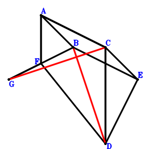
Answer：
\(\because \) ABEC is a parallelogram \(\therefore \small\overrightarrow{CE}=- \small\overrightarrow{CA} + \small\overrightarrow{CB}\).\(\because \) CD//AF and CD=2AF \(\therefore \small\overrightarrow{CF}=\small\overrightarrow{CA} + \dfrac{\small\overrightarrow{CD}}{2}\).\(\because \) F is the midpoint of GB \(\therefore \small\overrightarrow{CG}=- \small\overrightarrow{CB} + 2 \small\overrightarrow{CF}=2 \small\overrightarrow{CA} - \small\overrightarrow{CB} + \small\overrightarrow{CD}\).\(\because \) AC=DE \( \therefore\small\overrightarrow{CA}^{2} - \small\overrightarrow{ED}^{2}=\small\overrightarrow{CA}^{2} - \left(\small\overrightarrow{CD} - \small\overrightarrow{CE}\right)^{2}=\small\overrightarrow{CA}^{2} - \left(\small\overrightarrow{CA} - \small\overrightarrow{CB} + \small\overrightarrow{CD}\right)^{2}=2 \small\overrightarrow{CA} \cdot \small\overrightarrow{CB} - 2 \small\overrightarrow{CA} \cdot \small\overrightarrow{CD} - \small\overrightarrow{CB}^{2} + 2 \small\overrightarrow{CB} \cdot \small\overrightarrow{CD} - \small\overrightarrow{CD}^{2}=0.\)In conclusion, \(\small\overrightarrow{DB} \cdot \small\overrightarrow{GC}=- \small\overrightarrow{CG} \cdot \left(\small\overrightarrow{CB} - \small\overrightarrow{CD}\right)=- \left(\small\overrightarrow{CB} - \small\overrightarrow{CD}\right) \cdot \left(2 \small\overrightarrow{CA} - \small\overrightarrow{CB} + \small\overrightarrow{CD}\right)=- 2 \small\overrightarrow{CA} \cdot \small\overrightarrow{CB} + 2 \small\overrightarrow{CA} \cdot \small\overrightarrow{CD} + \small\overrightarrow{CB}^{2} - 2 \small\overrightarrow{CB} \cdot \small\overrightarrow{CD} + \small\overrightarrow{CD}^{2}=0\), that is, BD⊥GC.
Exercise 1211： Let ECAB be a parallelogram. H is the midpoint of GA. F is the midpoint of DA and GB. CA=DE. Prove that DB⊥CH.
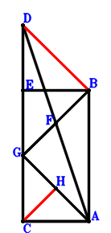
Answer：
\(\because \) ECAB is a parallelogram \(\therefore \small\overrightarrow{AE}=\small\overrightarrow{AB} + \small\overrightarrow{AC}\).\(\because \) F is the midpoint of DA \(\therefore \small\overrightarrow{AF}=\dfrac{\small\overrightarrow{AD}}{2}\).\(\because \) F is the midpoint of GB \(\therefore \small\overrightarrow{AG}=- \small\overrightarrow{AB} + 2 \small\overrightarrow{AF}=- \small\overrightarrow{AB} + \small\overrightarrow{AD}\).\(\because \) H is the midpoint of GA \(\therefore \small\overrightarrow{AH}=\dfrac{\small\overrightarrow{AG}}{2}=- \dfrac{\small\overrightarrow{AB}}{2} + \dfrac{\small\overrightarrow{AD}}{2}\).\(\because \) CA=DE \( \therefore\small\overrightarrow{CA}^{2} - \small\overrightarrow{ED}^{2}=\small\overrightarrow{AC}^{2} - \left(\small\overrightarrow{AD} - \small\overrightarrow{AE}\right)^{2}=\small\overrightarrow{AC}^{2} - \left(- \small\overrightarrow{AB} - \small\overrightarrow{AC} + \small\overrightarrow{AD}\right)^{2}=- \small\overrightarrow{AB}^{2} - 2 \small\overrightarrow{AB} \cdot \small\overrightarrow{AC} + 2 \small\overrightarrow{AB} \cdot \small\overrightarrow{AD} + 2 \small\overrightarrow{AC} \cdot \small\overrightarrow{AD} - \small\overrightarrow{AD}^{2}=0.\)In conclusion, \(\small\overrightarrow{DB} \cdot \small\overrightarrow{HC}=\left(\small\overrightarrow{AB} - \small\overrightarrow{AD}\right) \cdot \left(\small\overrightarrow{AC} - \small\overrightarrow{AH}\right)=\left(\small\overrightarrow{AB} - \small\overrightarrow{AD}\right) \cdot \left(\dfrac{\small\overrightarrow{AB}}{2} + \small\overrightarrow{AC} - \dfrac{\small\overrightarrow{AD}}{2}\right)=\dfrac{\small\overrightarrow{AB}^{2}}{2} + \small\overrightarrow{AB} \cdot \small\overrightarrow{AC} - \small\overrightarrow{AB} \cdot \small\overrightarrow{AD} - \small\overrightarrow{AC} \cdot \small\overrightarrow{AD} + \dfrac{\small\overrightarrow{AD}^{2}}{2}=0\), that is, DB⊥CH.
Exercise 1221： Let ABEC be a parallelogram. F is the midpoint of GE and AD. AC=DE. Prove that BD⊥GC.
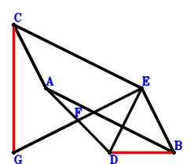
Answer：
\(\because \) ABEC is a parallelogram \(\therefore \small\overrightarrow{CE}=- \small\overrightarrow{CA} + \small\overrightarrow{CB}\).\(\because \) F is the midpoint of AD \(\therefore \small\overrightarrow{CF}=\dfrac{\small\overrightarrow{CA}}{2} + \dfrac{\small\overrightarrow{CD}}{2}\).\(\because \) F is the midpoint of GE \(\therefore \small\overrightarrow{CG}=\small\overrightarrow{CA} + \small\overrightarrow{CD} - \small\overrightarrow{CE}=2 \small\overrightarrow{CA} - \small\overrightarrow{CB} + \small\overrightarrow{CD}\).\(\because \) AC=DE \( \therefore\small\overrightarrow{CA}^{2} - \small\overrightarrow{ED}^{2}=\small\overrightarrow{CA}^{2} - \left(\small\overrightarrow{CD} - \small\overrightarrow{CE}\right)^{2}=\small\overrightarrow{CA}^{2} - \left(\small\overrightarrow{CA} - \small\overrightarrow{CB} + \small\overrightarrow{CD}\right)^{2}=2 \small\overrightarrow{CA} \cdot \small\overrightarrow{CB} - 2 \small\overrightarrow{CA} \cdot \small\overrightarrow{CD} - \small\overrightarrow{CB}^{2} + 2 \small\overrightarrow{CB} \cdot \small\overrightarrow{CD} - \small\overrightarrow{CD}^{2}=0.\)In conclusion, \(\small\overrightarrow{DB} \cdot \small\overrightarrow{GC}=- \small\overrightarrow{CG} \cdot \left(\small\overrightarrow{CB} - \small\overrightarrow{CD}\right)=- \left(\small\overrightarrow{CB} - \small\overrightarrow{CD}\right) \cdot \left(2 \small\overrightarrow{CA} - \small\overrightarrow{CB} + \small\overrightarrow{CD}\right)=- 2 \small\overrightarrow{CA} \cdot \small\overrightarrow{CB} + 2 \small\overrightarrow{CA} \cdot \small\overrightarrow{CD} + \small\overrightarrow{CB}^{2} - 2 \small\overrightarrow{CB} \cdot \small\overrightarrow{CD} + \small\overrightarrow{CD}^{2}=0\), that is, BD⊥GC.
Exercise 1253： Let ECAB be a parallelogram. FCGB is a trapezoid with GB//CF and GB=2CF. F is the midpoint of DA. CA=DE. Prove that GA⊥DB.
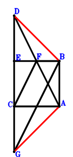
Answer：
\(\because \) ECAB is a parallelogram \(\therefore \small\overrightarrow{AE}=\small\overrightarrow{AB} + \small\overrightarrow{AC}\).\(\because \) F is the midpoint of DA \(\therefore \small\overrightarrow{AF}=\dfrac{\small\overrightarrow{AD}}{2}\).\(\because \) GB//CF and GB=2CF \(\therefore \small\overrightarrow{AG}=\small\overrightarrow{AB} + 2 \small\overrightarrow{AC} - 2 \small\overrightarrow{AF}=\small\overrightarrow{AB} + 2 \small\overrightarrow{AC} - \small\overrightarrow{AD}\).\(\because \) CA=DE \( \therefore\small\overrightarrow{CA}^{2} - \small\overrightarrow{ED}^{2}=\small\overrightarrow{AC}^{2} - \left(\small\overrightarrow{AD} - \small\overrightarrow{AE}\right)^{2}=\small\overrightarrow{AC}^{2} - \left(- \small\overrightarrow{AB} - \small\overrightarrow{AC} + \small\overrightarrow{AD}\right)^{2}=- \small\overrightarrow{AB}^{2} - 2 \small\overrightarrow{AB} \cdot \small\overrightarrow{AC} + 2 \small\overrightarrow{AB} \cdot \small\overrightarrow{AD} + 2 \small\overrightarrow{AC} \cdot \small\overrightarrow{AD} - \small\overrightarrow{AD}^{2}=0.\)In conclusion, \(\small\overrightarrow{AG} \cdot \small\overrightarrow{DB}=\small\overrightarrow{AG} \cdot \left(\small\overrightarrow{AB} - \small\overrightarrow{AD}\right)=\left(\small\overrightarrow{AB} - \small\overrightarrow{AD}\right) \cdot \left(\small\overrightarrow{AB} + 2 \small\overrightarrow{AC} - \small\overrightarrow{AD}\right)=\small\overrightarrow{AB}^{2} + 2 \small\overrightarrow{AB} \cdot \small\overrightarrow{AC} - 2 \small\overrightarrow{AB} \cdot \small\overrightarrow{AD} - 2 \small\overrightarrow{AC} \cdot \small\overrightarrow{AD} + \small\overrightarrow{AD}^{2}=0\), that is, GA⊥DB.
Exercise 1281： Let ECAB be a parallelogram. FCAG is a trapezoid with CA//FG and CA=2FG. F, G are the midpoints of DA, CH, respectively. CA=DE. Prove that DB⊥BH.
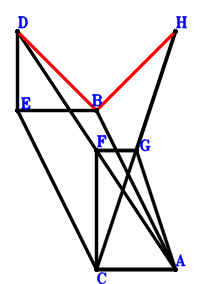
Answer：
\(\because \) ECAB is a parallelogram \(\therefore \small\overrightarrow{CE}=- \small\overrightarrow{CA} + \small\overrightarrow{CB}\).\(\because \) F is the midpoint of DA \(\therefore \small\overrightarrow{CF}=\dfrac{\small\overrightarrow{CA}}{2} + \dfrac{\small\overrightarrow{CD}}{2}\).\(\because \) CA//FG and CA=2FG \(\therefore \small\overrightarrow{CG}=\small\overrightarrow{CA} + \dfrac{\small\overrightarrow{CD}}{2}\).\(\because \) G is the midpoint of CH \(\therefore \small\overrightarrow{CH}=2 \small\overrightarrow{CG}=2 \small\overrightarrow{CA} + \small\overrightarrow{CD}\).\(\because \) CA=DE \( \therefore\small\overrightarrow{CA}^{2} - \small\overrightarrow{ED}^{2}=\small\overrightarrow{CA}^{2} - \left(\small\overrightarrow{CD} - \small\overrightarrow{CE}\right)^{2}=\small\overrightarrow{CA}^{2} - \left(\small\overrightarrow{CA} - \small\overrightarrow{CB} + \small\overrightarrow{CD}\right)^{2}=2 \small\overrightarrow{CA} \cdot \small\overrightarrow{CB} - 2 \small\overrightarrow{CA} \cdot \small\overrightarrow{CD} - \small\overrightarrow{CB}^{2} + 2 \small\overrightarrow{CB} \cdot \small\overrightarrow{CD} - \small\overrightarrow{CD}^{2}=0.\)In conclusion, \(\small\overrightarrow{DB} \cdot \small\overrightarrow{HB}=\left(\small\overrightarrow{CB} - \small\overrightarrow{CD}\right) \cdot \left(\small\overrightarrow{CB} - \small\overrightarrow{CH}\right)=\left(\small\overrightarrow{CB} - \small\overrightarrow{CD}\right) \cdot \left(- 2 \small\overrightarrow{CA} + \small\overrightarrow{CB} - \small\overrightarrow{CD}\right)=- 2 \small\overrightarrow{CA} \cdot \small\overrightarrow{CB} + 2 \small\overrightarrow{CA} \cdot \small\overrightarrow{CD} + \small\overrightarrow{CB}^{2} - 2 \small\overrightarrow{CB} \cdot \small\overrightarrow{CD} + \small\overrightarrow{CD}^{2}=0\), that is, DB⊥BH.
Exercise 1285： Let ECAB be a parallelogram. A, C are the midpoints of BF, GF, respectively. CA=DE. Prove that GD⊥DB.
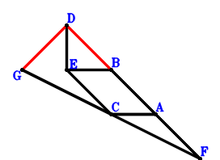
Answer：
\(\because \) ECAB is a parallelogram \(\therefore \small\overrightarrow{CE}=- \small\overrightarrow{CA} + \small\overrightarrow{CB}\).\(\because \) A is the midpoint of BF \(\therefore \small\overrightarrow{CF}=2 \small\overrightarrow{CA} - \small\overrightarrow{CB}\).\(\because \) C is the midpoint of GF \(\therefore \small\overrightarrow{CG}=- \small\overrightarrow{CF}=- 2 \small\overrightarrow{CA} + \small\overrightarrow{CB}\).\(\because \) CA=DE \( \therefore\small\overrightarrow{CA}^{2} - \small\overrightarrow{ED}^{2}=\small\overrightarrow{CA}^{2} - \left(\small\overrightarrow{CD} - \small\overrightarrow{CE}\right)^{2}=\small\overrightarrow{CA}^{2} - \left(\small\overrightarrow{CA} - \small\overrightarrow{CB} + \small\overrightarrow{CD}\right)^{2}=2 \small\overrightarrow{CA} \cdot \small\overrightarrow{CB} - 2 \small\overrightarrow{CA} \cdot \small\overrightarrow{CD} - \small\overrightarrow{CB}^{2} + 2 \small\overrightarrow{CB} \cdot \small\overrightarrow{CD} - \small\overrightarrow{CD}^{2}=0.\)In conclusion, \(\small\overrightarrow{DB} \cdot \small\overrightarrow{DG}=\left(\small\overrightarrow{CB} - \small\overrightarrow{CD}\right) \cdot \left(- \small\overrightarrow{CD} + \small\overrightarrow{CG}\right)=\left(\small\overrightarrow{CB} - \small\overrightarrow{CD}\right) \cdot \left(- 2 \small\overrightarrow{CA} + \small\overrightarrow{CB} - \small\overrightarrow{CD}\right)=- 2 \small\overrightarrow{CA} \cdot \small\overrightarrow{CB} + 2 \small\overrightarrow{CA} \cdot \small\overrightarrow{CD} + \small\overrightarrow{CB}^{2} - 2 \small\overrightarrow{CB} \cdot \small\overrightarrow{CD} + \small\overrightarrow{CD}^{2}=0\), that is, GD⊥DB.
Exercise 1293： Let ECAB and DCFG be parallelograms. A is the midpoint of CF. CA=DE. Prove that DB⊥BG.
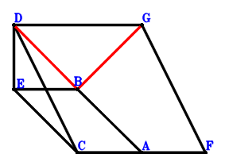
Answer：
\(\because \) ECAB is a parallelogram \(\therefore \small\overrightarrow{CE}=- \small\overrightarrow{CA} + \small\overrightarrow{CB}\).\(\because \) A is the midpoint of CF \(\therefore \small\overrightarrow{CF}=2 \small\overrightarrow{CA}\).\(\because \) DCFG is a parallelogram \(\therefore \small\overrightarrow{CG}=2 \small\overrightarrow{CA} + \small\overrightarrow{CD}\).\(\because \) CA=DE \( \therefore\small\overrightarrow{CA}^{2} - \small\overrightarrow{ED}^{2}=\small\overrightarrow{CA}^{2} - \left(\small\overrightarrow{CD} - \small\overrightarrow{CE}\right)^{2}=\small\overrightarrow{CA}^{2} - \left(\small\overrightarrow{CA} - \small\overrightarrow{CB} + \small\overrightarrow{CD}\right)^{2}=2 \small\overrightarrow{CA} \cdot \small\overrightarrow{CB} - 2 \small\overrightarrow{CA} \cdot \small\overrightarrow{CD} - \small\overrightarrow{CB}^{2} + 2 \small\overrightarrow{CB} \cdot \small\overrightarrow{CD} - \small\overrightarrow{CD}^{2}=0.\)In conclusion, \(\small\overrightarrow{DB} \cdot \small\overrightarrow{GB}=\left(\small\overrightarrow{CB} - \small\overrightarrow{CD}\right) \cdot \left(\small\overrightarrow{CB} - \small\overrightarrow{CG}\right)=\left(\small\overrightarrow{CB} - \small\overrightarrow{CD}\right) \cdot \left(- 2 \small\overrightarrow{CA} + \small\overrightarrow{CB} - \small\overrightarrow{CD}\right)=- 2 \small\overrightarrow{CA} \cdot \small\overrightarrow{CB} + 2 \small\overrightarrow{CA} \cdot \small\overrightarrow{CD} + \small\overrightarrow{CB}^{2} - 2 \small\overrightarrow{CB} \cdot \small\overrightarrow{CD} + \small\overrightarrow{CD}^{2}=0\), that is, DB⊥BG.
Exercise 1382： Let DBAE be a parallelogram. DFAC is a trapezoid with CD//AF and CD=2AF. F is the midpoint of GC. AC=EC. Prove that GB⊥BD.
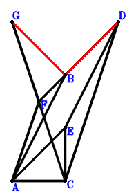
Answer：
\(\because \) DBAE is a parallelogram \(\therefore \small\overrightarrow{CE}=\small\overrightarrow{CA} - \small\overrightarrow{CB} + \small\overrightarrow{CD}\).\(\because \) CD//AF and CD=2AF \(\therefore \small\overrightarrow{CF}=\small\overrightarrow{CA} + \dfrac{\small\overrightarrow{CD}}{2}\).\(\because \) F is the midpoint of GC \(\therefore \small\overrightarrow{CG}=2 \small\overrightarrow{CF}=2 \small\overrightarrow{CA} + \small\overrightarrow{CD}\).\(\because \) AC=EC \( \therefore\small\overrightarrow{CA}^{2} - \small\overrightarrow{CE}^{2}=\small\overrightarrow{CA}^{2} - \left(\small\overrightarrow{CA} - \small\overrightarrow{CB} + \small\overrightarrow{CD}\right)^{2}=2 \small\overrightarrow{CA} \cdot \small\overrightarrow{CB} - 2 \small\overrightarrow{CA} \cdot \small\overrightarrow{CD} - \small\overrightarrow{CB}^{2} + 2 \small\overrightarrow{CB} \cdot \small\overrightarrow{CD} - \small\overrightarrow{CD}^{2}=0.\)In conclusion, \(\small\overrightarrow{DB} \cdot \small\overrightarrow{GB}=\left(\small\overrightarrow{CB} - \small\overrightarrow{CD}\right) \cdot \left(\small\overrightarrow{CB} - \small\overrightarrow{CG}\right)=\left(\small\overrightarrow{CB} - \small\overrightarrow{CD}\right) \cdot \left(- 2 \small\overrightarrow{CA} + \small\overrightarrow{CB} - \small\overrightarrow{CD}\right)=- 2 \small\overrightarrow{CA} \cdot \small\overrightarrow{CB} + 2 \small\overrightarrow{CA} \cdot \small\overrightarrow{CD} + \small\overrightarrow{CB}^{2} - 2 \small\overrightarrow{CB} \cdot \small\overrightarrow{CD} + \small\overrightarrow{CD}^{2}=0\), that is, GB⊥BD.
Exercise 1394： Let DBAE be a parallelogram. A is the midpoint of FC. G is the midpoint of FH and BC. AC=EC. Prove that BD⊥DH.
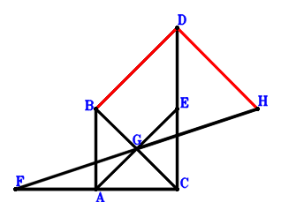
Answer：
\(\because \) DBAE is a parallelogram \(\therefore \small\overrightarrow{CE}=\small\overrightarrow{CA} - \small\overrightarrow{CB} + \small\overrightarrow{CD}\).\(\because \) A is the midpoint of FC \(\therefore \small\overrightarrow{CF}=2 \small\overrightarrow{CA}\).\(\because \) G is the midpoint of BC \(\therefore \small\overrightarrow{CG}=\dfrac{\small\overrightarrow{CB}}{2}\).\(\because \) G is the midpoint of FH \(\therefore \small\overrightarrow{CH}=- 2 \small\overrightarrow{CA} + 2 \small\overrightarrow{CG}=- 2 \small\overrightarrow{CA} + \small\overrightarrow{CB}\).\(\because \) AC=EC \( \therefore\small\overrightarrow{CA}^{2} - \small\overrightarrow{CE}^{2}=\small\overrightarrow{CA}^{2} - \left(\small\overrightarrow{CA} - \small\overrightarrow{CB} + \small\overrightarrow{CD}\right)^{2}=2 \small\overrightarrow{CA} \cdot \small\overrightarrow{CB} - 2 \small\overrightarrow{CA} \cdot \small\overrightarrow{CD} - \small\overrightarrow{CB}^{2} + 2 \small\overrightarrow{CB} \cdot \small\overrightarrow{CD} - \small\overrightarrow{CD}^{2}=0.\)In conclusion, \(\small\overrightarrow{DB} \cdot \small\overrightarrow{DH}=\left(\small\overrightarrow{CB} - \small\overrightarrow{CD}\right) \cdot \left(- \small\overrightarrow{CD} + \small\overrightarrow{CH}\right)=\left(\small\overrightarrow{CB} - \small\overrightarrow{CD}\right) \cdot \left(- 2 \small\overrightarrow{CA} + \small\overrightarrow{CB} - \small\overrightarrow{CD}\right)=- 2 \small\overrightarrow{CA} \cdot \small\overrightarrow{CB} + 2 \small\overrightarrow{CA} \cdot \small\overrightarrow{CD} + \small\overrightarrow{CB}^{2} - 2 \small\overrightarrow{CB} \cdot \small\overrightarrow{CD} + \small\overrightarrow{CD}^{2}=0\), that is, BD⊥DH.
Exercise 1476： Let EACD be a parallelogram. HAGF is a trapezoid with HA//FG and HA=2FG. F, G are the midpoints of AD, BC, respectively. AC=EB. Prove that BD⊥HC.
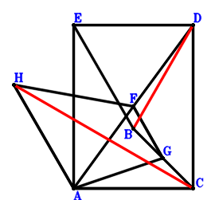
Answer：
\(\because \) EACD is a parallelogram \(\therefore \small\overrightarrow{CE}=\small\overrightarrow{CA} + \small\overrightarrow{CD}\).\(\because \) F is the midpoint of AD \(\therefore \small\overrightarrow{CF}=\dfrac{\small\overrightarrow{CA}}{2} + \dfrac{\small\overrightarrow{CD}}{2}\).\(\because \) G is the midpoint of BC \(\therefore \small\overrightarrow{CG}=\dfrac{\small\overrightarrow{CB}}{2}\).\(\because \) HA//FG and HA=2FG \(\therefore \small\overrightarrow{CH}=2 \small\overrightarrow{CA} + \small\overrightarrow{CD} - 2 \small\overrightarrow{CG}=2 \small\overrightarrow{CA} - \small\overrightarrow{CB} + \small\overrightarrow{CD}\).\(\because \) AC=EB \( \therefore- \small\overrightarrow{BE}^{2} + \small\overrightarrow{CA}^{2}=\small\overrightarrow{CA}^{2} - \left(- \small\overrightarrow{CB} + \small\overrightarrow{CE}\right)^{2}=\small\overrightarrow{CA}^{2} - \left(\small\overrightarrow{CA} - \small\overrightarrow{CB} + \small\overrightarrow{CD}\right)^{2}=2 \small\overrightarrow{CA} \cdot \small\overrightarrow{CB} - 2 \small\overrightarrow{CA} \cdot \small\overrightarrow{CD} - \small\overrightarrow{CB}^{2} + 2 \small\overrightarrow{CB} \cdot \small\overrightarrow{CD} - \small\overrightarrow{CD}^{2}=0.\)In conclusion, \(\small\overrightarrow{DB} \cdot \small\overrightarrow{HC}=- \small\overrightarrow{CH} \cdot \left(\small\overrightarrow{CB} - \small\overrightarrow{CD}\right)=- \left(\small\overrightarrow{CB} - \small\overrightarrow{CD}\right) \cdot \left(2 \small\overrightarrow{CA} - \small\overrightarrow{CB} + \small\overrightarrow{CD}\right)=- 2 \small\overrightarrow{CA} \cdot \small\overrightarrow{CB} + 2 \small\overrightarrow{CA} \cdot \small\overrightarrow{CD} + \small\overrightarrow{CB}^{2} - 2 \small\overrightarrow{CB} \cdot \small\overrightarrow{CD} + \small\overrightarrow{CD}^{2}=0\), that is, BD⊥HC.
Exercise 1502： Let FCAB and DCAE be parallelograms. G is the midpoint of HA and FC. CA=EB. Prove that HD⊥DB.
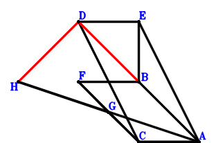
Answer：
\(\because \) DCAE is a parallelogram \(\therefore \small\overrightarrow{CE}=\small\overrightarrow{CA} + \small\overrightarrow{CD}\).\(\because \) FCAB is a parallelogram \(\therefore \small\overrightarrow{CF}=- \small\overrightarrow{CA} + \small\overrightarrow{CB}\).\(\because \) G is the midpoint of FC \(\therefore \small\overrightarrow{CG}=\dfrac{\small\overrightarrow{CF}}{2}=- \dfrac{\small\overrightarrow{CA}}{2} + \dfrac{\small\overrightarrow{CB}}{2}\).\(\because \) G is the midpoint of HA \(\therefore \small\overrightarrow{CH}=- \small\overrightarrow{CA} + 2 \small\overrightarrow{CG}=- 2 \small\overrightarrow{CA} + \small\overrightarrow{CB}\).\(\because \) CA=EB \( \therefore- \small\overrightarrow{BE}^{2} + \small\overrightarrow{CA}^{2}=\small\overrightarrow{CA}^{2} - \left(- \small\overrightarrow{CB} + \small\overrightarrow{CE}\right)^{2}=\small\overrightarrow{CA}^{2} - \left(\small\overrightarrow{CA} - \small\overrightarrow{CB} + \small\overrightarrow{CD}\right)^{2}=2 \small\overrightarrow{CA} \cdot \small\overrightarrow{CB} - 2 \small\overrightarrow{CA} \cdot \small\overrightarrow{CD} - \small\overrightarrow{CB}^{2} + 2 \small\overrightarrow{CB} \cdot \small\overrightarrow{CD} - \small\overrightarrow{CD}^{2}=0.\)In conclusion, \(\small\overrightarrow{DB} \cdot \small\overrightarrow{DH}=\left(\small\overrightarrow{CB} - \small\overrightarrow{CD}\right) \cdot \left(- \small\overrightarrow{CD} + \small\overrightarrow{CH}\right)=\left(\small\overrightarrow{CB} - \small\overrightarrow{CD}\right) \cdot \left(- 2 \small\overrightarrow{CA} + \small\overrightarrow{CB} - \small\overrightarrow{CD}\right)=- 2 \small\overrightarrow{CA} \cdot \small\overrightarrow{CB} + 2 \small\overrightarrow{CA} \cdot \small\overrightarrow{CD} + \small\overrightarrow{CB}^{2} - 2 \small\overrightarrow{CB} \cdot \small\overrightarrow{CD} + \small\overrightarrow{CD}^{2}=0\), that is, HD⊥DB.
Exercise 1525： Let EACD be a parallelogram. GACF is a trapezoid with GA//FC and GA=2FC. F is the midpoint of DA. AC=EB. Prove that GB⊥BD.
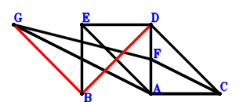
Answer：
\(\because \) EACD is a parallelogram \(\therefore \small\overrightarrow{AE}=- \small\overrightarrow{AC} + \small\overrightarrow{AD}\).\(\because \) F is the midpoint of DA \(\therefore \small\overrightarrow{AF}=\dfrac{\small\overrightarrow{AD}}{2}\).\(\because \) GA//FC and GA=2FC \(\therefore \small\overrightarrow{AG}=- 2 \small\overrightarrow{AC} + 2 \small\overrightarrow{AF}=- 2 \small\overrightarrow{AC} + \small\overrightarrow{AD}\).\(\because \) AC=EB \( \therefore- \small\overrightarrow{BE}^{2} + \small\overrightarrow{CA}^{2}=\small\overrightarrow{AC}^{2} - \left(- \small\overrightarrow{AB} + \small\overrightarrow{AE}\right)^{2}=\small\overrightarrow{AC}^{2} - \left(- \small\overrightarrow{AB} - \small\overrightarrow{AC} + \small\overrightarrow{AD}\right)^{2}=- \small\overrightarrow{AB}^{2} - 2 \small\overrightarrow{AB} \cdot \small\overrightarrow{AC} + 2 \small\overrightarrow{AB} \cdot \small\overrightarrow{AD} + 2 \small\overrightarrow{AC} \cdot \small\overrightarrow{AD} - \small\overrightarrow{AD}^{2}=0.\)In conclusion, \(\small\overrightarrow{DB} \cdot \small\overrightarrow{GB}=\left(\small\overrightarrow{AB} - \small\overrightarrow{AD}\right) \cdot \left(\small\overrightarrow{AB} - \small\overrightarrow{AG}\right)=\left(\small\overrightarrow{AB} - \small\overrightarrow{AD}\right) \cdot \left(\small\overrightarrow{AB} + 2 \small\overrightarrow{AC} - \small\overrightarrow{AD}\right)=\small\overrightarrow{AB}^{2} + 2 \small\overrightarrow{AB} \cdot \small\overrightarrow{AC} - 2 \small\overrightarrow{AB} \cdot \small\overrightarrow{AD} - 2 \small\overrightarrow{AC} \cdot \small\overrightarrow{AD} + \small\overrightarrow{AD}^{2}=0\), that is, GB⊥BD.
Exercise 1569： Let HACG be a trapezoid with AC//HG and AC=2HG. G is the midpoint of AD. E is the midpoint of BC and FD. AC=AF. Prove that BD⊥HE.
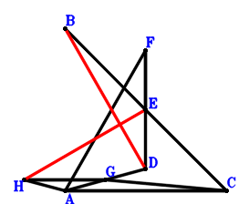
Answer：
\(\because \) E is the midpoint of BC \(\therefore \small\overrightarrow{CE}=\dfrac{\small\overrightarrow{CB}}{2}\).\(\because \) E is the midpoint of FD \(\therefore \small\overrightarrow{CF}=- \small\overrightarrow{CD} + 2 \small\overrightarrow{CE}=\small\overrightarrow{CB} - \small\overrightarrow{CD}\).\(\because \) G is the midpoint of AD \(\therefore \small\overrightarrow{CG}=\dfrac{\small\overrightarrow{CA}}{2} + \dfrac{\small\overrightarrow{CD}}{2}\).\(\because \) AC//HG and AC=2HG \(\therefore \small\overrightarrow{CH}=\small\overrightarrow{CA} + \dfrac{\small\overrightarrow{CD}}{2}\).\(\because \) AC=AF \( \therefore\small\overrightarrow{CA}^{2} - \small\overrightarrow{FA}^{2}=\small\overrightarrow{CA}^{2} - \left(\small\overrightarrow{CA} - \small\overrightarrow{CF}\right)^{2}=\small\overrightarrow{CA}^{2} - \left(\small\overrightarrow{CA} - \small\overrightarrow{CB} + \small\overrightarrow{CD}\right)^{2}=2 \small\overrightarrow{CA} \cdot \small\overrightarrow{CB} - 2 \small\overrightarrow{CA} \cdot \small\overrightarrow{CD} - \small\overrightarrow{CB}^{2} + 2 \small\overrightarrow{CB} \cdot \small\overrightarrow{CD} - \small\overrightarrow{CD}^{2}=0.\)In conclusion, \(\small\overrightarrow{DB} \cdot \small\overrightarrow{HE}=\left(\small\overrightarrow{CB} - \small\overrightarrow{CD}\right) \cdot \left(\small\overrightarrow{CE} - \small\overrightarrow{CH}\right)=\left(\small\overrightarrow{CB} - \small\overrightarrow{CD}\right) \cdot \left(- \small\overrightarrow{CA} + \dfrac{\small\overrightarrow{CB}}{2} - \dfrac{\small\overrightarrow{CD}}{2}\right)=- \small\overrightarrow{CA} \cdot \small\overrightarrow{CB} + \small\overrightarrow{CA} \cdot \small\overrightarrow{CD} + \dfrac{\small\overrightarrow{CB}^{2}}{2} - \small\overrightarrow{CB} \cdot \small\overrightarrow{CD} + \dfrac{\small\overrightarrow{CD}^{2}}{2}=0\), that is, BD⊥HE.
Exercise 1608： Let H, A be the midpoints of DG, BG, respectively. E is the midpoint of BC and FD. AC=FA. Prove that BD⊥CH.
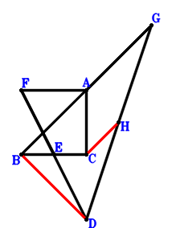
Answer：
\(\because \) E is the midpoint of BC \(\therefore \small\overrightarrow{CE}=\dfrac{\small\overrightarrow{CB}}{2}\).\(\because \) E is the midpoint of FD \(\therefore \small\overrightarrow{CF}=- \small\overrightarrow{CD} + 2 \small\overrightarrow{CE}=\small\overrightarrow{CB} - \small\overrightarrow{CD}\).\(\because \) A is the midpoint of BG \(\therefore \small\overrightarrow{CG}=2 \small\overrightarrow{CA} - \small\overrightarrow{CB}\).\(\because \) H is the midpoint of DG \(\therefore \small\overrightarrow{CH}=\dfrac{\small\overrightarrow{CD}}{2} + \dfrac{\small\overrightarrow{CG}}{2}=\small\overrightarrow{CA} - \dfrac{\small\overrightarrow{CB}}{2} + \dfrac{\small\overrightarrow{CD}}{2}\).\(\because \) AC=FA \( \therefore\small\overrightarrow{CA}^{2} - \small\overrightarrow{FA}^{2}=\small\overrightarrow{CA}^{2} - \left(\small\overrightarrow{CA} - \small\overrightarrow{CF}\right)^{2}=\small\overrightarrow{CA}^{2} - \left(\small\overrightarrow{CA} - \small\overrightarrow{CB} + \small\overrightarrow{CD}\right)^{2}=2 \small\overrightarrow{CA} \cdot \small\overrightarrow{CB} - 2 \small\overrightarrow{CA} \cdot \small\overrightarrow{CD} - \small\overrightarrow{CB}^{2} + 2 \small\overrightarrow{CB} \cdot \small\overrightarrow{CD} - \small\overrightarrow{CD}^{2}=0.\)In conclusion, \(\small\overrightarrow{DB} \cdot \small\overrightarrow{HC}=- \small\overrightarrow{CH} \cdot \left(\small\overrightarrow{CB} - \small\overrightarrow{CD}\right)=- \left(\small\overrightarrow{CB} - \small\overrightarrow{CD}\right) \cdot \left(\small\overrightarrow{CA} - \dfrac{\small\overrightarrow{CB}}{2} + \dfrac{\small\overrightarrow{CD}}{2}\right)=- \small\overrightarrow{CA} \cdot \small\overrightarrow{CB} + \small\overrightarrow{CA} \cdot \small\overrightarrow{CD} + \dfrac{\small\overrightarrow{CB}^{2}}{2} - \small\overrightarrow{CB} \cdot \small\overrightarrow{CD} + \dfrac{\small\overrightarrow{CD}^{2}}{2}=0\), that is, BD⊥CH.
Exercise 1645： Let DGAH be a parallelogram. C is the midpoint of GA. E is the midpoint of DF and CB. CA=AF. Prove that DB⊥BH.
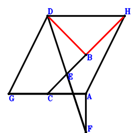
Answer：
\(\because \) E is the midpoint of CB \(\therefore \small\overrightarrow{AE}=\dfrac{\small\overrightarrow{AB}}{2} + \dfrac{\small\overrightarrow{AC}}{2}\).\(\because \) E is the midpoint of DF \(\therefore \small\overrightarrow{AF}=- \small\overrightarrow{AD} + 2 \small\overrightarrow{AE}=\small\overrightarrow{AB} + \small\overrightarrow{AC} - \small\overrightarrow{AD}\).\(\because \) C is the midpoint of GA \(\therefore \small\overrightarrow{AG}=2 \small\overrightarrow{AC}\).\(\because \) DGAH is a parallelogram \(\therefore \small\overrightarrow{AH}=\small\overrightarrow{AD} - \small\overrightarrow{AG}=- 2 \small\overrightarrow{AC} + \small\overrightarrow{AD}\).\(\because \) CA=AF \( \therefore\small\overrightarrow{AC}^{2} - \small\overrightarrow{AF}^{2}=\small\overrightarrow{AC}^{2} - \left(\small\overrightarrow{AB} + \small\overrightarrow{AC} - \small\overrightarrow{AD}\right)^{2}=- \small\overrightarrow{AB}^{2} - 2 \small\overrightarrow{AB} \cdot \small\overrightarrow{AC} + 2 \small\overrightarrow{AB} \cdot \small\overrightarrow{AD} + 2 \small\overrightarrow{AC} \cdot \small\overrightarrow{AD} - \small\overrightarrow{AD}^{2}=0.\)In conclusion, \(\small\overrightarrow{DB} \cdot \small\overrightarrow{HB}=\left(\small\overrightarrow{AB} - \small\overrightarrow{AD}\right) \cdot \left(\small\overrightarrow{AB} - \small\overrightarrow{AH}\right)=\left(\small\overrightarrow{AB} - \small\overrightarrow{AD}\right) \cdot \left(\small\overrightarrow{AB} + 2 \small\overrightarrow{AC} - \small\overrightarrow{AD}\right)=\small\overrightarrow{AB}^{2} + 2 \small\overrightarrow{AB} \cdot \small\overrightarrow{AC} - 2 \small\overrightarrow{AB} \cdot \small\overrightarrow{AD} - 2 \small\overrightarrow{AC} \cdot \small\overrightarrow{AD} + \small\overrightarrow{AD}^{2}=0\), that is, DB⊥BH.
Exercise 1711： Let EACH be a trapezoid with AC//EH and AC=2EH. G is the midpoint of AD. E is the midpoint of AF and BC. AC=DF. Prove that BD⊥GH.
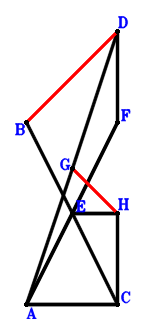
Answer：
\(\because \) E is the midpoint of BC \(\therefore \small\overrightarrow{CE}=\dfrac{\small\overrightarrow{CB}}{2}\).\(\because \) E is the midpoint of AF \(\therefore \small\overrightarrow{CF}=- \small\overrightarrow{CA} + 2 \small\overrightarrow{CE}=- \small\overrightarrow{CA} + \small\overrightarrow{CB}\).\(\because \) G is the midpoint of AD \(\therefore \small\overrightarrow{CG}=\dfrac{\small\overrightarrow{CA}}{2} + \dfrac{\small\overrightarrow{CD}}{2}\).\(\because \) AC//EH and AC=2EH \(\therefore \small\overrightarrow{CH}=- \dfrac{\small\overrightarrow{CA}}{2} + \dfrac{\small\overrightarrow{CB}}{2}\).\(\because \) AC=DF \( \therefore\small\overrightarrow{CA}^{2} - \small\overrightarrow{FD}^{2}=\small\overrightarrow{CA}^{2} - \left(\small\overrightarrow{CD} - \small\overrightarrow{CF}\right)^{2}=\small\overrightarrow{CA}^{2} - \left(\small\overrightarrow{CA} - \small\overrightarrow{CB} + \small\overrightarrow{CD}\right)^{2}=2 \small\overrightarrow{CA} \cdot \small\overrightarrow{CB} - 2 \small\overrightarrow{CA} \cdot \small\overrightarrow{CD} - \small\overrightarrow{CB}^{2} + 2 \small\overrightarrow{CB} \cdot \small\overrightarrow{CD} - \small\overrightarrow{CD}^{2}=0.\)In conclusion, \(\small\overrightarrow{DB} \cdot \small\overrightarrow{GH}=\left(\small\overrightarrow{CB} - \small\overrightarrow{CD}\right) \cdot \left(- \small\overrightarrow{CG} + \small\overrightarrow{CH}\right)=\left(\small\overrightarrow{CB} - \small\overrightarrow{CD}\right) \cdot \left(- \small\overrightarrow{CA} + \dfrac{\small\overrightarrow{CB}}{2} - \dfrac{\small\overrightarrow{CD}}{2}\right)=- \small\overrightarrow{CA} \cdot \small\overrightarrow{CB} + \small\overrightarrow{CA} \cdot \small\overrightarrow{CD} + \dfrac{\small\overrightarrow{CB}^{2}}{2} - \small\overrightarrow{CB} \cdot \small\overrightarrow{CD} + \dfrac{\small\overrightarrow{CD}^{2}}{2}=0\), that is, BD⊥GH.
Exercise 1714： Let DHGC be a parallelogram. A is the midpoint of GB. E is the midpoint of AF and BC. AC=DF. Prove that BD⊥HC.
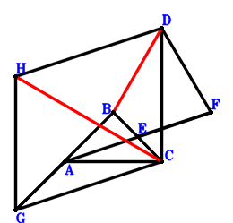
Answer：
\(\because \) E is the midpoint of BC \(\therefore \small\overrightarrow{CE}=\dfrac{\small\overrightarrow{CB}}{2}\).\(\because \) E is the midpoint of AF \(\therefore \small\overrightarrow{CF}=- \small\overrightarrow{CA} + 2 \small\overrightarrow{CE}=- \small\overrightarrow{CA} + \small\overrightarrow{CB}\).\(\because \) A is the midpoint of GB \(\therefore \small\overrightarrow{CG}=2 \small\overrightarrow{CA} - \small\overrightarrow{CB}\).\(\because \) DHGC is a parallelogram \(\therefore \small\overrightarrow{CH}=2 \small\overrightarrow{CA} - \small\overrightarrow{CB} + \small\overrightarrow{CD}\).\(\because \) AC=DF \( \therefore\small\overrightarrow{CA}^{2} - \small\overrightarrow{FD}^{2}=\small\overrightarrow{CA}^{2} - \left(\small\overrightarrow{CD} - \small\overrightarrow{CF}\right)^{2}=\small\overrightarrow{CA}^{2} - \left(\small\overrightarrow{CA} - \small\overrightarrow{CB} + \small\overrightarrow{CD}\right)^{2}=2 \small\overrightarrow{CA} \cdot \small\overrightarrow{CB} - 2 \small\overrightarrow{CA} \cdot \small\overrightarrow{CD} - \small\overrightarrow{CB}^{2} + 2 \small\overrightarrow{CB} \cdot \small\overrightarrow{CD} - \small\overrightarrow{CD}^{2}=0.\)In conclusion, \(\small\overrightarrow{DB} \cdot \small\overrightarrow{HC}=- \small\overrightarrow{CH} \cdot \left(\small\overrightarrow{CB} - \small\overrightarrow{CD}\right)=- \left(\small\overrightarrow{CB} - \small\overrightarrow{CD}\right) \cdot \left(2 \small\overrightarrow{CA} - \small\overrightarrow{CB} + \small\overrightarrow{CD}\right)=- 2 \small\overrightarrow{CA} \cdot \small\overrightarrow{CB} + 2 \small\overrightarrow{CA} \cdot \small\overrightarrow{CD} + \small\overrightarrow{CB}^{2} - 2 \small\overrightarrow{CB} \cdot \small\overrightarrow{CD} + \small\overrightarrow{CD}^{2}=0\), that is, BD⊥HC.
Exercise 1751： Let A, C be the midpoints of HG, DG, respectively. E is the midpoint of BC and FA. CA=DF. Prove that DB⊥BH.
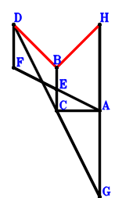
Answer：
\(\because \) E is the midpoint of BC \(\therefore \small\overrightarrow{CE}=\dfrac{\small\overrightarrow{CB}}{2}\).\(\because \) E is the midpoint of FA \(\therefore \small\overrightarrow{CF}=- \small\overrightarrow{CA} + 2 \small\overrightarrow{CE}=- \small\overrightarrow{CA} + \small\overrightarrow{CB}\).\(\because \) C is the midpoint of DG \(\therefore \small\overrightarrow{CG}=- \small\overrightarrow{CD}\).\(\because \) A is the midpoint of HG \(\therefore \small\overrightarrow{CH}=2 \small\overrightarrow{CA} - \small\overrightarrow{CG}=2 \small\overrightarrow{CA} + \small\overrightarrow{CD}\).\(\because \) CA=DF \( \therefore\small\overrightarrow{CA}^{2} - \small\overrightarrow{FD}^{2}=\small\overrightarrow{CA}^{2} - \left(\small\overrightarrow{CD} - \small\overrightarrow{CF}\right)^{2}=\small\overrightarrow{CA}^{2} - \left(\small\overrightarrow{CA} - \small\overrightarrow{CB} + \small\overrightarrow{CD}\right)^{2}=2 \small\overrightarrow{CA} \cdot \small\overrightarrow{CB} - 2 \small\overrightarrow{CA} \cdot \small\overrightarrow{CD} - \small\overrightarrow{CB}^{2} + 2 \small\overrightarrow{CB} \cdot \small\overrightarrow{CD} - \small\overrightarrow{CD}^{2}=0.\)In conclusion, \(\small\overrightarrow{DB} \cdot \small\overrightarrow{HB}=\left(\small\overrightarrow{CB} - \small\overrightarrow{CD}\right) \cdot \left(\small\overrightarrow{CB} - \small\overrightarrow{CH}\right)=\left(\small\overrightarrow{CB} - \small\overrightarrow{CD}\right) \cdot \left(- 2 \small\overrightarrow{CA} + \small\overrightarrow{CB} - \small\overrightarrow{CD}\right)=- 2 \small\overrightarrow{CA} \cdot \small\overrightarrow{CB} + 2 \small\overrightarrow{CA} \cdot \small\overrightarrow{CD} + \small\overrightarrow{CB}^{2} - 2 \small\overrightarrow{CB} \cdot \small\overrightarrow{CD} + \small\overrightarrow{CD}^{2}=0\), that is, DB⊥BH.
Exercise 1848： Let GACD be a trapezoid with GD//AC and GD=2AC. E is the midpoint of BF and DA. AC=FC. Prove that GB⊥BD.
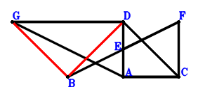
Answer：
\(\because \) E is the midpoint of DA \(\therefore \small\overrightarrow{CE}=\dfrac{\small\overrightarrow{CA}}{2} + \dfrac{\small\overrightarrow{CD}}{2}\).\(\because \) E is the midpoint of BF \(\therefore \small\overrightarrow{CF}=- \small\overrightarrow{CB} + 2 \small\overrightarrow{CE}=\small\overrightarrow{CA} - \small\overrightarrow{CB} + \small\overrightarrow{CD}\).\(\because \) GD//AC and GD=2AC \(\therefore \small\overrightarrow{CG}=2 \small\overrightarrow{CA} + \small\overrightarrow{CD}\).\(\because \) AC=FC \( \therefore\small\overrightarrow{CA}^{2} - \small\overrightarrow{CF}^{2}=\small\overrightarrow{CA}^{2} - \left(\small\overrightarrow{CA} - \small\overrightarrow{CB} + \small\overrightarrow{CD}\right)^{2}=2 \small\overrightarrow{CA} \cdot \small\overrightarrow{CB} - 2 \small\overrightarrow{CA} \cdot \small\overrightarrow{CD} - \small\overrightarrow{CB}^{2} + 2 \small\overrightarrow{CB} \cdot \small\overrightarrow{CD} - \small\overrightarrow{CD}^{2}=0.\)In conclusion, \(\small\overrightarrow{DB} \cdot \small\overrightarrow{GB}=\left(\small\overrightarrow{CB} - \small\overrightarrow{CD}\right) \cdot \left(\small\overrightarrow{CB} - \small\overrightarrow{CG}\right)=\left(\small\overrightarrow{CB} - \small\overrightarrow{CD}\right) \cdot \left(- 2 \small\overrightarrow{CA} + \small\overrightarrow{CB} - \small\overrightarrow{CD}\right)=- 2 \small\overrightarrow{CA} \cdot \small\overrightarrow{CB} + 2 \small\overrightarrow{CA} \cdot \small\overrightarrow{CD} + \small\overrightarrow{CB}^{2} - 2 \small\overrightarrow{CB} \cdot \small\overrightarrow{CD} + \small\overrightarrow{CD}^{2}=0\), that is, GB⊥BD.
Exercise 1853： Let BACG be a parallelogram. H is the midpoint of AI and CG. E is the midpoint of AD and FB. AC=FC. Prove that BD⊥DI.
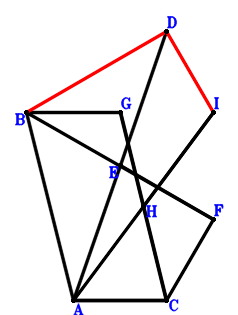
Answer：
\(\because \) E is the midpoint of AD \(\therefore \small\overrightarrow{CE}=\dfrac{\small\overrightarrow{CA}}{2} + \dfrac{\small\overrightarrow{CD}}{2}\).\(\because \) E is the midpoint of FB \(\therefore \small\overrightarrow{CF}=- \small\overrightarrow{CB} + 2 \small\overrightarrow{CE}=\small\overrightarrow{CA} - \small\overrightarrow{CB} + \small\overrightarrow{CD}\).\(\because \) BACG is a parallelogram \(\therefore \small\overrightarrow{CG}=- \small\overrightarrow{CA} + \small\overrightarrow{CB}\).\(\because \) H is the midpoint of CG \(\therefore \small\overrightarrow{CH}=\dfrac{\small\overrightarrow{CG}}{2}=- \dfrac{\small\overrightarrow{CA}}{2} + \dfrac{\small\overrightarrow{CB}}{2}\).\(\because \) H is the midpoint of AI \(\therefore \small\overrightarrow{CI}=- \small\overrightarrow{CA} + 2 \small\overrightarrow{CH}=- 2 \small\overrightarrow{CA} + \small\overrightarrow{CB}\).\(\because \) AC=FC \( \therefore\small\overrightarrow{CA}^{2} - \small\overrightarrow{CF}^{2}=\small\overrightarrow{CA}^{2} - \left(\small\overrightarrow{CA} - \small\overrightarrow{CB} + \small\overrightarrow{CD}\right)^{2}=2 \small\overrightarrow{CA} \cdot \small\overrightarrow{CB} - 2 \small\overrightarrow{CA} \cdot \small\overrightarrow{CD} - \small\overrightarrow{CB}^{2} + 2 \small\overrightarrow{CB} \cdot \small\overrightarrow{CD} - \small\overrightarrow{CD}^{2}=0.\)In conclusion, \(\small\overrightarrow{DB} \cdot \small\overrightarrow{DI}=\left(\small\overrightarrow{CB} - \small\overrightarrow{CD}\right) \cdot \left(- \small\overrightarrow{CD} + \small\overrightarrow{CI}\right)=\left(\small\overrightarrow{CB} - \small\overrightarrow{CD}\right) \cdot \left(- 2 \small\overrightarrow{CA} + \small\overrightarrow{CB} - \small\overrightarrow{CD}\right)=- 2 \small\overrightarrow{CA} \cdot \small\overrightarrow{CB} + 2 \small\overrightarrow{CA} \cdot \small\overrightarrow{CD} + \small\overrightarrow{CB}^{2} - 2 \small\overrightarrow{CB} \cdot \small\overrightarrow{CD} + \small\overrightarrow{CD}^{2}=0\), that is, BD⊥DI.
Exercise 1908： Let F, H be the midpoints of AD, GC, respectively. E is the midpoint of BC and GD. AC=2FE. Prove that BD⊥AH.
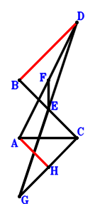
Answer：
\(\because \) E is the midpoint of BC \(\therefore \small\overrightarrow{CE}=\dfrac{\small\overrightarrow{CB}}{2}\).\(\because \) F is the midpoint of AD \(\therefore \small\overrightarrow{CF}=\dfrac{\small\overrightarrow{CA}}{2} + \dfrac{\small\overrightarrow{CD}}{2}\).\(\because \) E is the midpoint of GD \(\therefore \small\overrightarrow{CG}=- \small\overrightarrow{CD} + 2 \small\overrightarrow{CE}=\small\overrightarrow{CB} - \small\overrightarrow{CD}\).\(\because \) H is the midpoint of GC \(\therefore \small\overrightarrow{CH}=\dfrac{\small\overrightarrow{CG}}{2}=\dfrac{\small\overrightarrow{CB}}{2} - \dfrac{\small\overrightarrow{CD}}{2}\).\(\because \) AC=2FE \( \therefore\small\overrightarrow{CA}^{2} - 4 \small\overrightarrow{EF}^{2}=\small\overrightarrow{CA}^{2} - 4 \left(- \small\overrightarrow{CE} + \small\overrightarrow{CF}\right)^{2}=\small\overrightarrow{CA}^{2} - 4 \left(\dfrac{\small\overrightarrow{CA}}{2} - \dfrac{\small\overrightarrow{CB}}{2} + \dfrac{\small\overrightarrow{CD}}{2}\right)^{2}=2 \small\overrightarrow{CA} \cdot \small\overrightarrow{CB} - 2 \small\overrightarrow{CA} \cdot \small\overrightarrow{CD} - \small\overrightarrow{CB}^{2} + 2 \small\overrightarrow{CB} \cdot \small\overrightarrow{CD} - \small\overrightarrow{CD}^{2}=0.\)In conclusion, \(\small\overrightarrow{AH} \cdot \small\overrightarrow{DB}=\left(- \small\overrightarrow{CA} + \small\overrightarrow{CH}\right) \cdot \left(\small\overrightarrow{CB} - \small\overrightarrow{CD}\right)=\left(\small\overrightarrow{CB} - \small\overrightarrow{CD}\right) \cdot \left(- \small\overrightarrow{CA} + \dfrac{\small\overrightarrow{CB}}{2} - \dfrac{\small\overrightarrow{CD}}{2}\right)=- \small\overrightarrow{CA} \cdot \small\overrightarrow{CB} + \small\overrightarrow{CA} \cdot \small\overrightarrow{CD} + \dfrac{\small\overrightarrow{CB}^{2}}{2} - \small\overrightarrow{CB} \cdot \small\overrightarrow{CD} + \dfrac{\small\overrightarrow{CD}^{2}}{2}=0\), that is, BD⊥AH.
Exercise 1942： Let DCHG be a parallelogram. F is the midpoint of AD. E is the midpoint of AG and BC. AC=2FE. Prove that AH⊥BD.
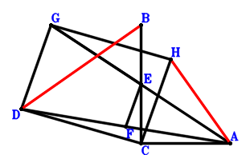
Answer：
\(\because \) E is the midpoint of BC \(\therefore \small\overrightarrow{CE}=\dfrac{\small\overrightarrow{CB}}{2}\).\(\because \) F is the midpoint of AD \(\therefore \small\overrightarrow{CF}=\dfrac{\small\overrightarrow{CA}}{2} + \dfrac{\small\overrightarrow{CD}}{2}\).\(\because \) E is the midpoint of AG \(\therefore \small\overrightarrow{CG}=- \small\overrightarrow{CA} + 2 \small\overrightarrow{CE}=- \small\overrightarrow{CA} + \small\overrightarrow{CB}\).\(\because \) DCHG is a parallelogram \(\therefore \small\overrightarrow{CH}=- \small\overrightarrow{CA} + \small\overrightarrow{CB} - \small\overrightarrow{CD}\).\(\because \) AC=2FE \( \therefore\small\overrightarrow{CA}^{2} - 4 \small\overrightarrow{EF}^{2}=\small\overrightarrow{CA}^{2} - 4 \left(- \small\overrightarrow{CE} + \small\overrightarrow{CF}\right)^{2}=\small\overrightarrow{CA}^{2} - 4 \left(\dfrac{\small\overrightarrow{CA}}{2} - \dfrac{\small\overrightarrow{CB}}{2} + \dfrac{\small\overrightarrow{CD}}{2}\right)^{2}=2 \small\overrightarrow{CA} \cdot \small\overrightarrow{CB} - 2 \small\overrightarrow{CA} \cdot \small\overrightarrow{CD} - \small\overrightarrow{CB}^{2} + 2 \small\overrightarrow{CB} \cdot \small\overrightarrow{CD} - \small\overrightarrow{CD}^{2}=0.\)In conclusion, \(\small\overrightarrow{AH} \cdot \small\overrightarrow{DB}=\left(- \small\overrightarrow{CA} + \small\overrightarrow{CH}\right) \cdot \left(\small\overrightarrow{CB} - \small\overrightarrow{CD}\right)=\left(\small\overrightarrow{CB} - \small\overrightarrow{CD}\right) \cdot \left(- 2 \small\overrightarrow{CA} + \small\overrightarrow{CB} - \small\overrightarrow{CD}\right)=- 2 \small\overrightarrow{CA} \cdot \small\overrightarrow{CB} + 2 \small\overrightarrow{CA} \cdot \small\overrightarrow{CD} + \small\overrightarrow{CB}^{2} - 2 \small\overrightarrow{CB} \cdot \small\overrightarrow{CD} + \small\overrightarrow{CD}^{2}=0\), that is, AH⊥BD.
Exercise 1954： Let GBAC be a trapezoid with BA//GC and BA=2GC. F, E are the midpoints of DA, BC, respectively. AC=2FE. Prove that BD⊥FG.
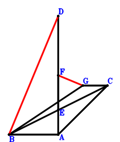
Answer：
\(\because \) E is the midpoint of BC \(\therefore \small\overrightarrow{AE}=\dfrac{\small\overrightarrow{AB}}{2} + \dfrac{\small\overrightarrow{AC}}{2}\).\(\because \) F is the midpoint of DA \(\therefore \small\overrightarrow{AF}=\dfrac{\small\overrightarrow{AD}}{2}\).\(\because \) BA//GC and BA=2GC \(\therefore \small\overrightarrow{AG}=\dfrac{\small\overrightarrow{AB}}{2} + \small\overrightarrow{AC}\).\(\because \) AC=2FE \( \therefore\small\overrightarrow{CA}^{2} - 4 \small\overrightarrow{EF}^{2}=\small\overrightarrow{AC}^{2} - 4 \left(- \small\overrightarrow{AE} + \small\overrightarrow{AF}\right)^{2}=\small\overrightarrow{AC}^{2} - 4 \left(- \dfrac{\small\overrightarrow{AB}}{2} - \dfrac{\small\overrightarrow{AC}}{2} + \dfrac{\small\overrightarrow{AD}}{2}\right)^{2}=- \small\overrightarrow{AB}^{2} - 2 \small\overrightarrow{AB} \cdot \small\overrightarrow{AC} + 2 \small\overrightarrow{AB} \cdot \small\overrightarrow{AD} + 2 \small\overrightarrow{AC} \cdot \small\overrightarrow{AD} - \small\overrightarrow{AD}^{2}=0.\)In conclusion, \(\small\overrightarrow{DB} \cdot \small\overrightarrow{FG}=\left(\small\overrightarrow{AB} - \small\overrightarrow{AD}\right) \cdot \left(- \small\overrightarrow{AF} + \small\overrightarrow{AG}\right)=\left(\small\overrightarrow{AB} - \small\overrightarrow{AD}\right) \cdot \left(\dfrac{\small\overrightarrow{AB}}{2} + \small\overrightarrow{AC} - \dfrac{\small\overrightarrow{AD}}{2}\right)=\dfrac{\small\overrightarrow{AB}^{2}}{2} + \small\overrightarrow{AB} \cdot \small\overrightarrow{AC} - \small\overrightarrow{AB} \cdot \small\overrightarrow{AD} - \small\overrightarrow{AC} \cdot \small\overrightarrow{AD} + \dfrac{\small\overrightarrow{AD}^{2}}{2}=0\), that is, BD⊥FG.